← 返回阅读库 · 原论文目录
论文讲解阅读文档 · 生成对抗网络GAN · v145
【精读AI论文】pix2pix-简笔画猫转真猫
视频时长 01:35:08；讲解文字 27,029 字符；提取讲解画面 700 张。按视频原顺序阅读，每段文字保留时间戳。
文字来自整段视频的自动语音转写，按自然停顿分段，并与 PPT / 论文页面 / 演示画面对齐。未将讲解压缩为摘要；术语、数字和口述公式请结合画面及原论文核对。 阅读稿已校正规范部分明确术语误识别；原始逐字稿和每处修改记录另行保留。
讲解画面为源视频截图（640×360），不是可编辑 PPT 文件。全片按每秒 2 帧扫描内容变化，逐步展开页保留；连续动画保留代表画面。清晰度受源视频限制。
下载完整资料包 · 含离线 HTML、PDF、Word、全部 PPT 画面和字幕。
原论文与材料
Image-to-Image Translation with Conditional Adversarial Networks · 下载完整 PDF（17 页）
按时间阅读
00:00:00–00:00:13 · 画面 001
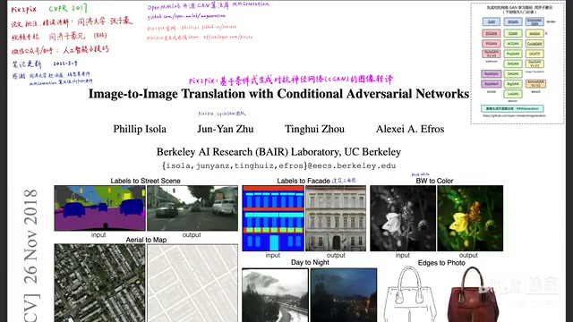
00:00:00–00:00:13 · 画面 001大家好,我是同济子豪兄今天带大家精读图像生成和图像转移领域的必读论文 Pix2Pix 在我精心设计的生成对抗网络 GAN 学习路径中
00:00:13–00:00:15 · 画面 002
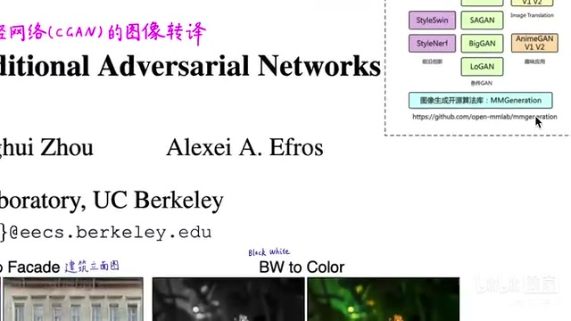
00:00:13–00:00:15 · 画面 002Pix2Pix 和 CycleGAN 是 Image Translation 图像转译领域的必读经典论文这两篇论文都很重要都有一万多引用量而且作者都来自同一个团队在上一期讲 CycleGAN 论文禁读的时候我就说过 Pix2Pix 和 CycleGAN 是让我拍案叫绝的两篇论文一定要读一读
00:00:15–00:00:38 · 画面 003
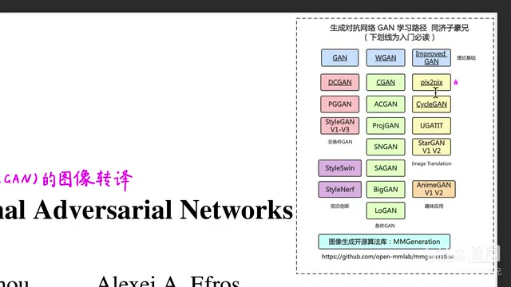
00:00:15–00:00:38 · 画面 003这两篇论文呢，写的都非常通俗易懂，插图画得赏心悦目，代码呢全部开源，网站里有各种趣味应用，而且很多同学毕业设计都要用这两个算法。我上次也说过是站在科技和人文的十字路口，而且这个 Pix2Pix 最让人难忘的是它有一个交互式的 demo，在线 demo 页面。
00:00:38–00:00:41 · 画面 004
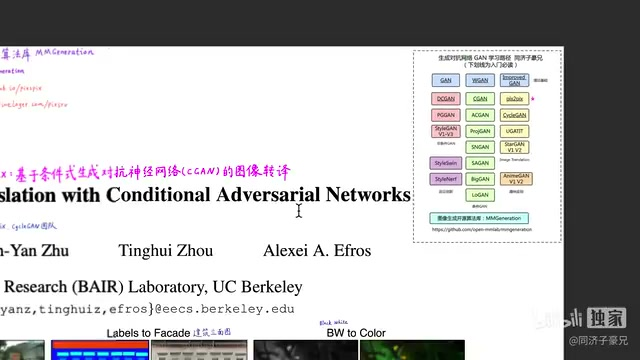
00:00:38–00:00:41 · 画面 00400:00:41–00:00:42 · 画面 005
00:00:41–00:00:42 · 画面 00500:00:42–00:00:56 · 画面 006
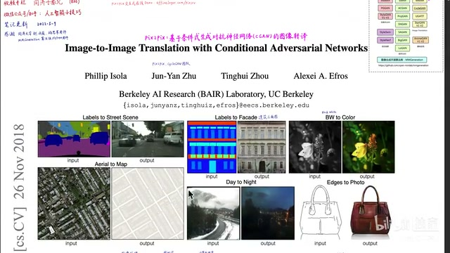
00:00:42–00:00:56 · 画面 00600:00:56–00:00:58 · 画面 007
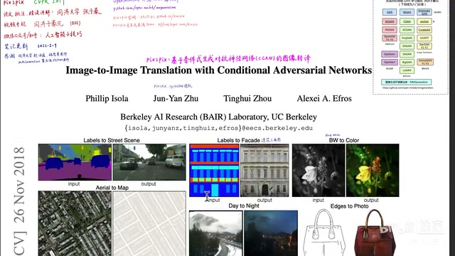
00:00:56–00:00:58 · 画面 00700:00:58–00:01:01 · 画面 008
00:00:58–00:01:01 · 画面 00800:01:01–00:01:07 · 画面 009
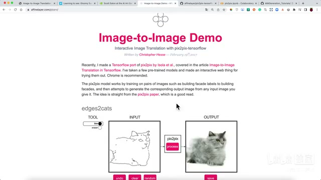
00:01:01–00:01:07 · 画面 009pix2pix 的标志性成果就是这个简笔画的猫转成真的猫，建筑外立面的羽翼设计图转成建筑外立面真实的照片，简笔画的鞋转成真鞋的照片，简笔画的背包转成真实背包的照片。来我们体验一下。
00:01:07–00:01:08 · 画面 010
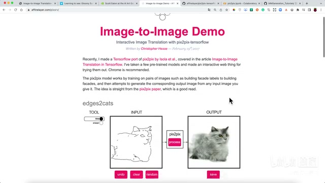
00:01:07–00:01:08 · 画面 01000:01:08–00:01:12 · 画面 011
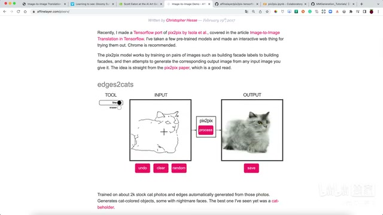
00:01:08–00:01:12 · 画面 01100:01:12–00:01:18 · 画面 012
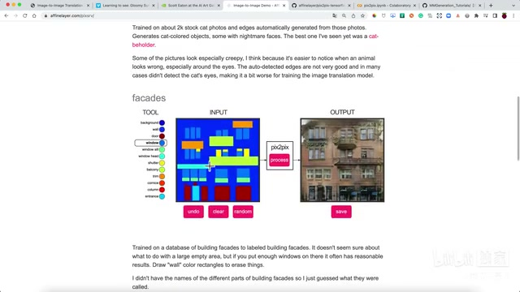
00:01:12–00:01:18 · 画面 01200:01:18–00:01:19 · 画面 013
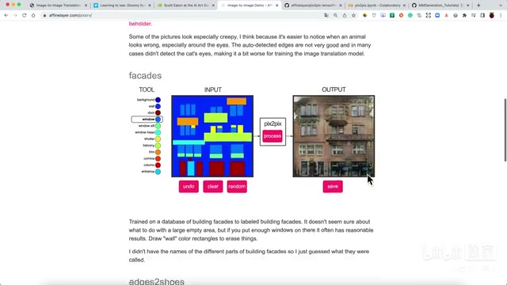
00:01:18–00:01:19 · 画面 01300:01:19–00:01:23 · 画面 014
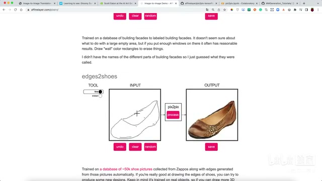
00:01:19–00:01:23 · 画面 01400:01:23–00:01:27 · 画面 015
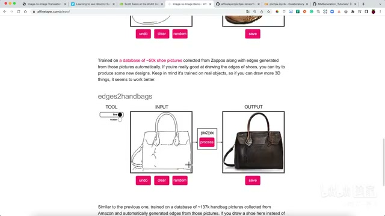
00:01:23–00:01:27 · 画面 01500:01:27–00:01:28 · 画面 016
00:01:27–00:01:28 · 画面 01600:01:28–00:01:29 · 画面 017
00:01:28–00:01:29 · 画面 017它预设出来一个默认的简笔画点一下 process 它就能把简笔画转成一个对应的斜的照片像素到像素之间是对应的所以它叫 pix to pix 那么这个任务呢叫做 edges to shoes 就是边缘轮廓的简笔画转成真斜好我们现在来自己画一个斜啊这是个斜给它画个斜根
00:01:29–00:01:32 · 画面 018
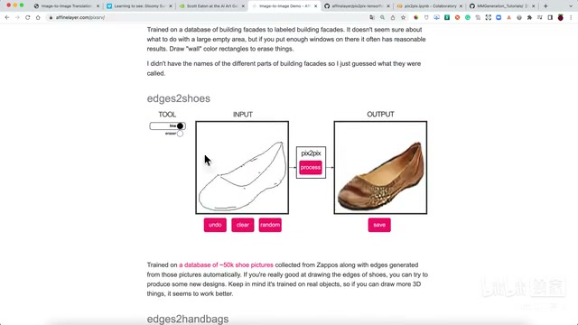
00:01:29–00:01:32 · 画面 01800:01:32–00:01:33 · 画面 019
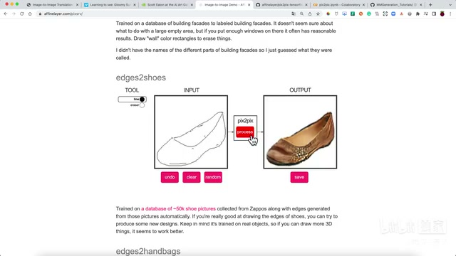
00:01:32–00:01:33 · 画面 01900:01:33–00:01:35 · 画面 020
00:01:33–00:01:35 · 画面 02000:01:35–00:01:47 · 画面 021
00:01:35–00:01:47 · 画面 02100:01:47–00:01:48 · 画面 022
00:01:47–00:01:48 · 画面 02200:01:48–00:01:49 · 画面 023
00:01:48–00:01:49 · 画面 02300:01:49–00:01:52 · 画面 024
00:01:49–00:01:52 · 画面 02400:01:52–00:01:56 · 画面 025
00:01:52–00:01:56 · 画面 02500:01:56–00:02:00 · 画面 026
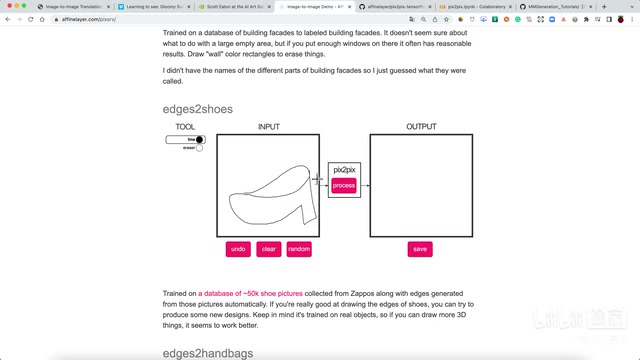
00:01:56–00:02:00 · 画面 026点 process，它会先下载模型，然后在浏览器中在线的来画出这个鞋。我的画工不是很好，但是效果是很好的。我们来看看这个 facade 是建筑物外立面语义图生成建筑物外立面真实照片，比如说我们可以在这加个柱子，在左边开个门，然后在这开个窗台。
00:02:00–00:02:04 · 画面 027
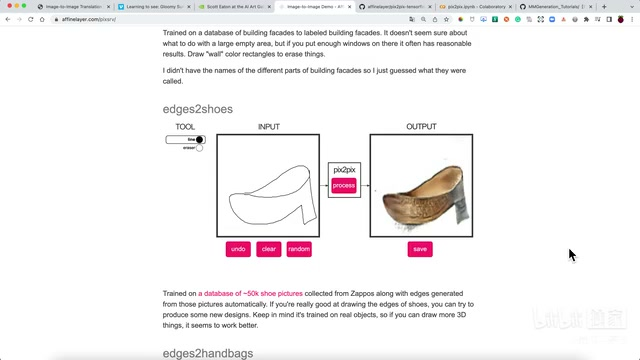
00:02:00–00:02:04 · 画面 02700:02:04–00:02:06 · 画面 028
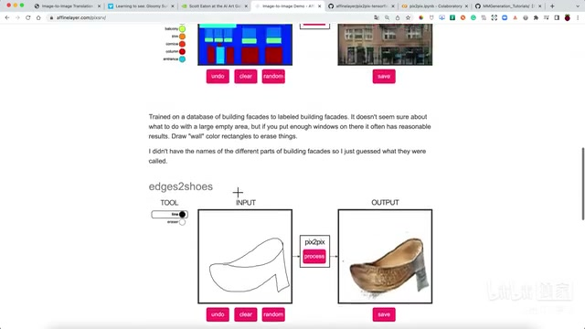
00:02:04–00:02:06 · 画面 02800:02:06–00:02:15 · 画面 029
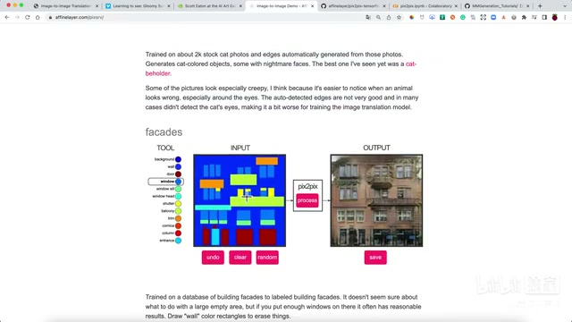
00:02:06–00:02:15 · 画面 02900:02:15–00:02:16 · 画面 030
00:02:15–00:02:16 · 画面 03000:02:16–00:02:20 · 画面 031
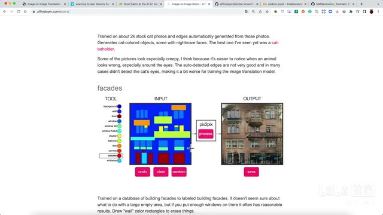
00:02:16–00:02:20 · 画面 03100:02:20–00:02:23 · 画面 032
00:02:20–00:02:23 · 画面 03200:02:23–00:02:26 · 画面 033
00:02:23–00:02:26 · 画面 033balcony
00:02:26–00:02:28 · 画面 034
00:02:26–00:02:28 · 画面 034在这再加个屋檐好，那么这还可以开扇窗，点击 process 处理一下好。你看这个阳台、屋檐、柱子、门都生成出来了，这是一个非常让人印象深刻的 demo。我还记得我 2018 年第一次打开这个网站的时候，玩了一下午，非常的好玩。这个猫呢，你也可以试一试，我画工不好，我就不演示了。
00:02:28–00:02:29 · 画面 035
00:02:28–00:02:29 · 画面 03500:02:29–00:02:30 · 画面 036
00:02:29–00:02:30 · 画面 03600:02:30–00:02:33 · 画面 037
00:02:30–00:02:33 · 画面 03700:02:33–00:02:34 · 画面 038
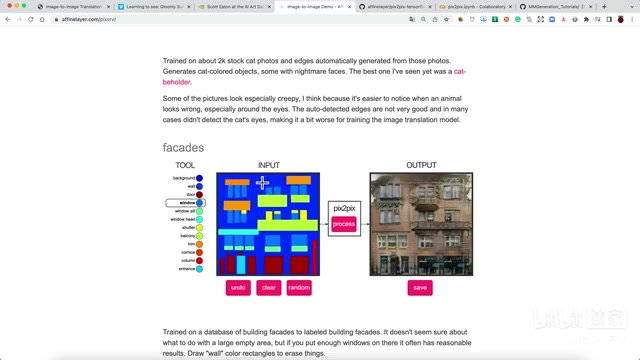
00:02:33–00:02:34 · 画面 03800:02:34–00:02:36 · 画面 039
00:02:34–00:02:36 · 画面 03900:02:36–00:02:38 · 画面 040
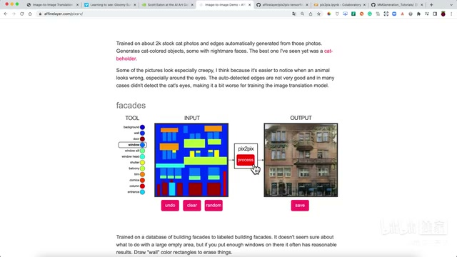
00:02:36–00:02:38 · 画面 04000:02:38–00:02:39 · 画面 041
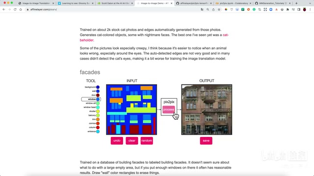
00:02:38–00:02:39 · 画面 04100:02:39–00:02:44 · 画面 042
00:02:39–00:02:44 · 画面 04200:02:44–00:02:45 · 画面 043
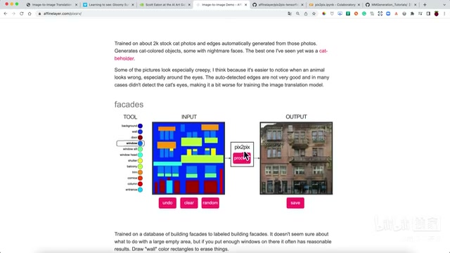
00:02:44–00:02:45 · 画面 04300:02:45–00:02:48 · 画面 044
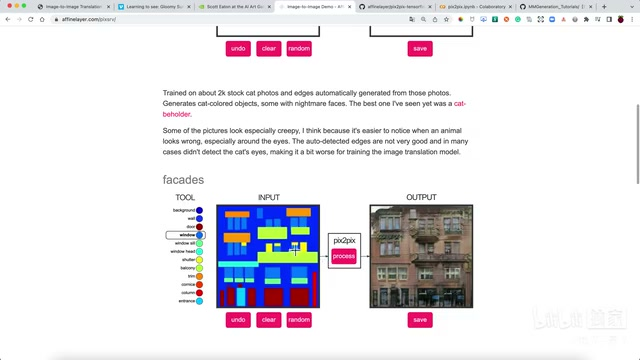
00:02:45–00:02:48 · 画面 04400:02:48–00:02:50 · 画面 045
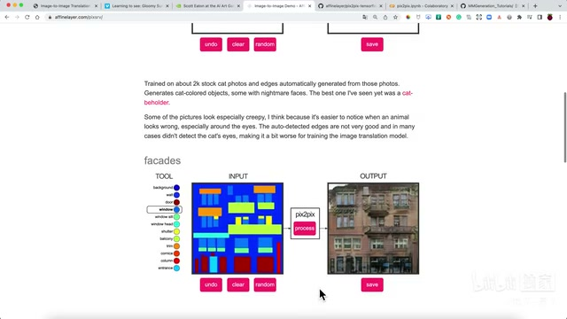
00:02:48–00:02:50 · 画面 04500:02:50–00:02:54 · 画面 046
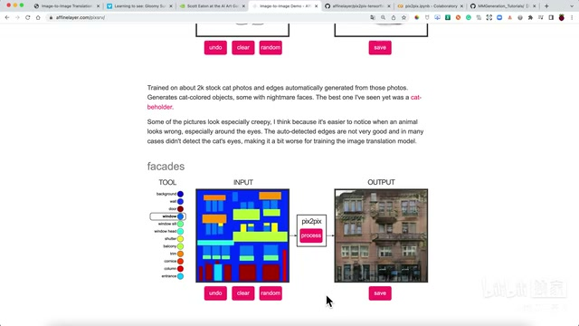
00:02:50–00:02:54 · 画面 04600:02:54–00:02:55 · 画面 047
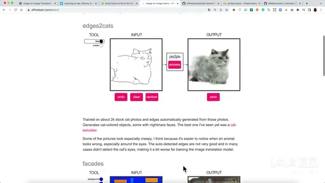
00:02:54–00:02:55 · 画面 04700:02:55–00:03:00 · 画面 048
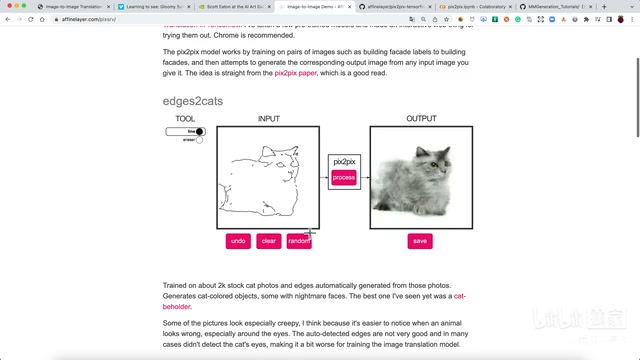
00:02:55–00:03:00 · 画面 048那么它是一个什么原理呢？就是你可以获取很多真猫的图片，然后用 OpenCV 的边缘提取，然后把它的每一张图片的边缘
00:03:00–00:03:21 · 画面 049
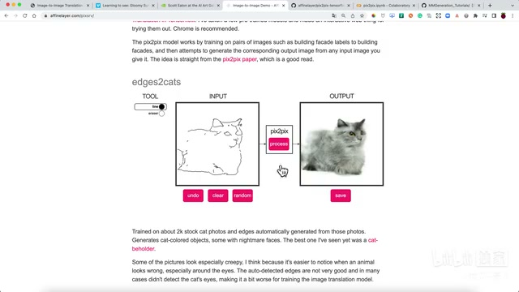
00:03:00–00:03:21 · 画面 049给它提取出来，构建一个像素到像素的映射数据集。就是数据集里面包含两类图片，一类是边缘简笔画、边缘轮廓简笔画，一类是真的图片。那么它俩是一一对应的，所以 pix2pix 解决的是一个像素配对的图像转移问题。
00:03:21–00:03:42 · 画面 050
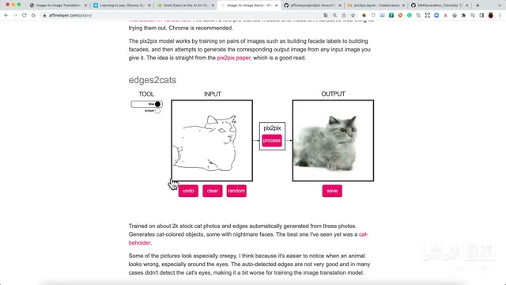
00:03:21–00:03:42 · 画面 050而我们上次课讲的 CycleGAN 是非配对的图像转移问题那么 CycleGAN 也可以用来解决 Ages to Cats, Facades 还有 Ages to Shoes, Ages to Bag 这些问题所以 Image Translation 领域它非常的好玩既可以用配对的数据集去训练也可以用不配对的数据集去训练
00:03:42–00:03:43 · 画面 051
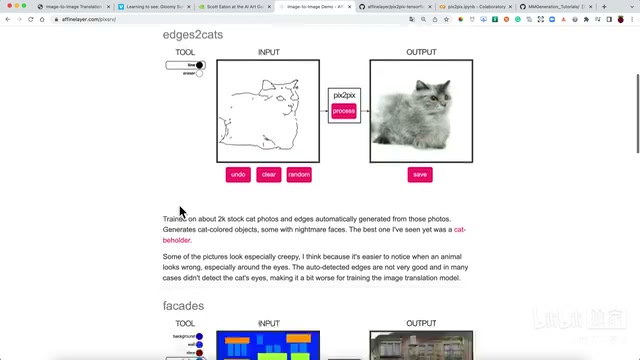
00:03:42–00:03:43 · 画面 05100:03:43–00:03:45 · 画面 052
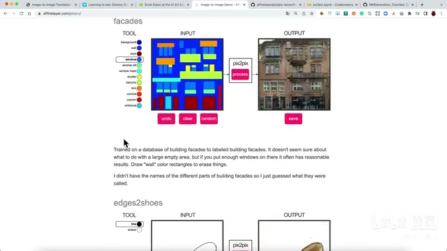
00:03:43–00:03:45 · 画面 05200:03:45–00:04:21 · 画面 053
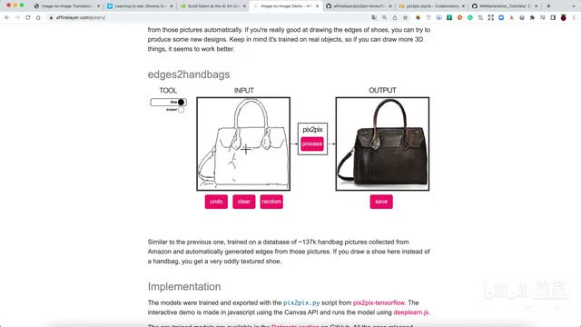
00:03:45–00:04:21 · 画面 053特别是对于艺术、建筑、设计这些专业同学，现在人工智能和数字艺术是一个大潮流，包括用 NFT 用区块链去做数字藏品。那么用人工智能去做数字艺术，就是非常重要的一种算法，就是 PIX2PIX 还有 CycleGAN。那如果你想用自己的代码来实现 PIX2PIX，那你可以直接看它官方开源的这个 Collab 代码。这个 Collab 代码呢，包含了数据集的下载、导入模型的定义。
00:04:21–00:04:23 · 画面 054
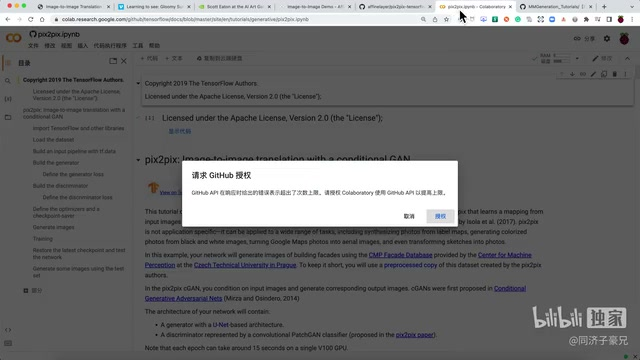
00:04:21–00:04:23 · 画面 05400:04:23–00:04:24 · 画面 055
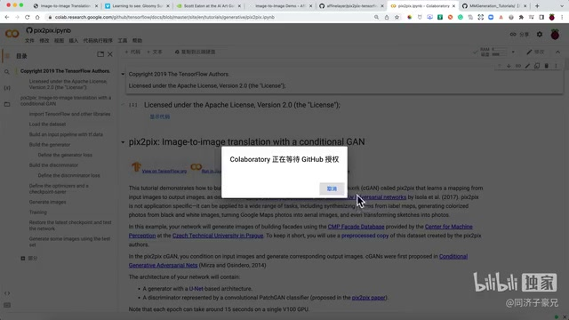
00:04:23–00:04:24 · 画面 05500:04:24–00:04:28 · 画面 056
00:04:24–00:04:28 · 画面 05600:04:28–00:04:32 · 画面 057
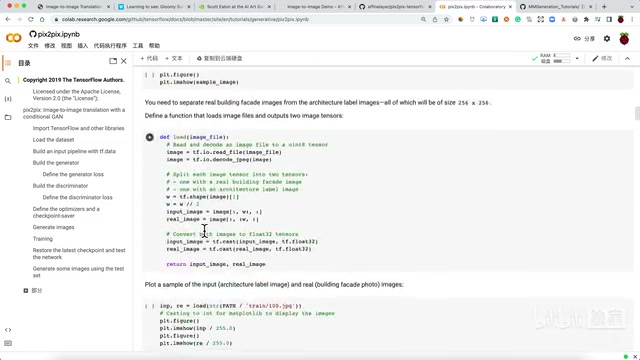
00:04:28–00:04:32 · 画面 057它基本是按我们一会儿要讲的论文里边的
00:04:32–00:04:33 · 画面 058
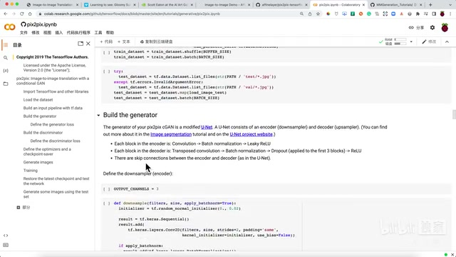
00:04:32–00:04:33 · 画面 05800:04:33–00:04:37 · 画面 059
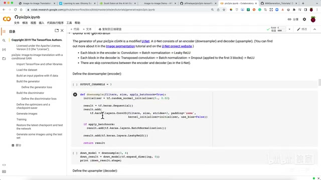
00:04:33–00:04:37 · 画面 059模型结构来定义的。生成器是一个 U-Net
00:04:37–00:04:41 · 画面 060
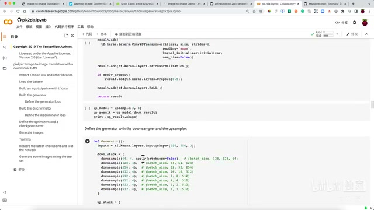
00:04:37–00:04:41 · 画面 060判别器是一个 PatchGAN
00:04:41–00:04:45 · 画面 061
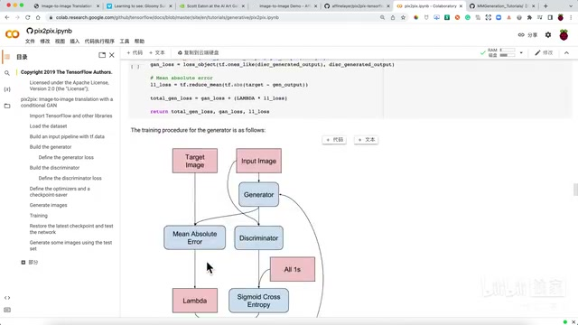
00:04:41–00:04:45 · 画面 061然后它的损失函数如何定义。然后如何去训练
00:04:45–00:04:46 · 画面 062
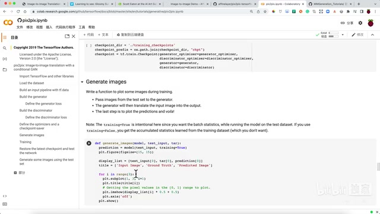
00:04:45–00:04:46 · 画面 062用训练出来的模型去生成新图片。
00:04:46–00:04:50 · 画面 063
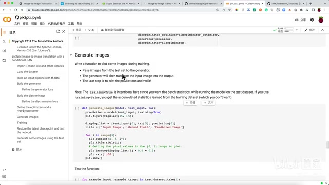
00:04:46–00:04:50 · 画面 063那么就可以直接按照这个 Colab 跑。
00:04:50–00:04:51 · 画面 064
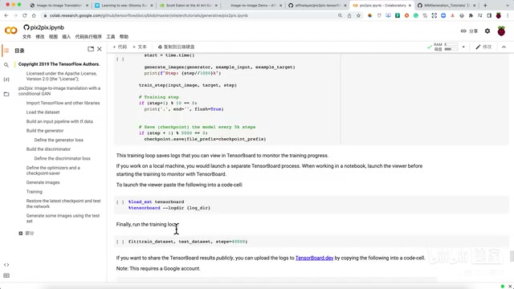
00:04:50–00:04:51 · 画面 06400:04:51–00:04:56 · 画面 065
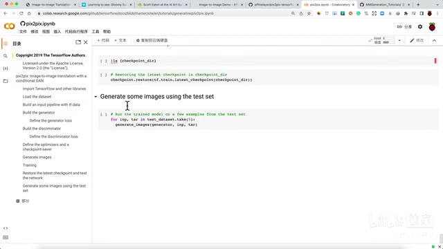
00:04:51–00:04:56 · 画面 065我会把这个链接放在扩展阅读里边。你也可以用我们 OpenMMLab
00:04:56–00:05:09 · 画面 066
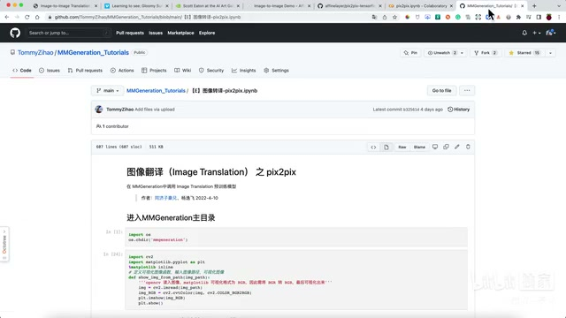
00:04:56–00:05:09 · 画面 066开源图像生成工具箱。mmgeneration 的代码视频教程这个我上次课视频已经发布了。里边就有一个 pix2pix 的预训练模型调用的代码教程。
00:05:09–00:05:11 · 画面 067
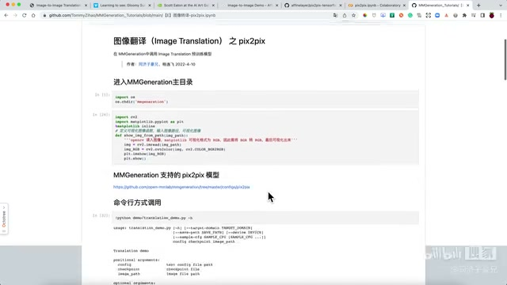
00:05:09–00:05:11 · 画面 067你可以用它来解决这个 facade。
00:05:11–00:05:13 · 画面 068
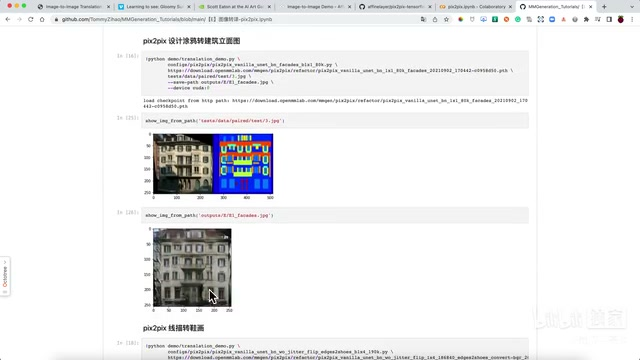
00:05:11–00:05:13 · 画面 068线描转斜画
00:05:13–00:05:16 · 画面 069
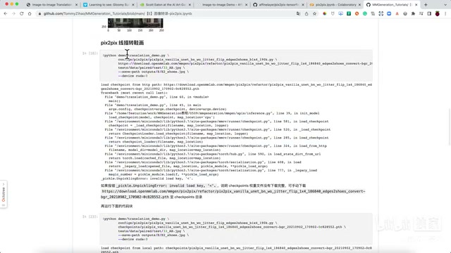
00:05:13–00:05:16 · 画面 069还有这个线描转手提包这些应用。
00:05:16–00:05:17 · 画面 070
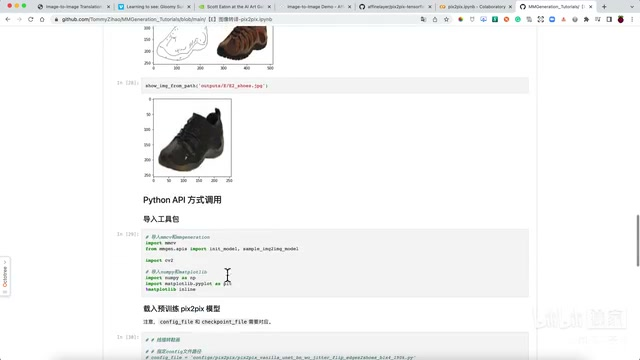
00:05:16–00:05:17 · 画面 07000:05:17–00:05:34 · 画面 071
00:05:17–00:05:34 · 画面 071那当然这个 pix2pix 是 2017 年的论文。现在看来比较老了。因为它是很经典的。所以我们拿来读那如果你现在还想做。跟图像转移相关的项目的话可以用更好更新更 sota 的算法。就在我这个学习路径里边。
00:05:34–00:05:37 · 画面 072
00:05:34–00:05:37 · 画面 072比如说你可以用 U-GAT-IT
00:05:37–00:05:38 · 画面 073
00:05:37–00:05:38 · 画面 07300:05:38–00:05:53 · 画面 074
00:05:38–00:05:53 · 画面 074或者是 StarGAN这些新的算法那么它们也是用来解决 image translation。图像转移任务的这个 StarGAN 可以实现多种风格的转译，这个生成对抗网络水非常的深。那么我大致画成了这几个江湖有非条件干条件干 image translation 还有理论基础。那么画下滑线的是必读论文，很多论文我们都已经读过了，像 AnimeGAN 是专门做图像转动漫风格的。
00:05:53–00:05:55 · 画面 075
00:05:53–00:05:55 · 画面 07500:05:55–00:06:23 · 画面 076
00:05:55–00:06:23 · 画面 076比如说风景照转动漫的风格，这个也很值得一读，它也是 image translation。所以你看不管是 pix2pix 还是 CycleGAN，它解决的都是 image translation。而 image translation 又包含了一大堆问题，像这种语义分割图转真实接近图，谷歌地图转航拍图，航拍图转谷歌地图，外立面设计图转外立面图。
00:06:23–00:06:25 · 画面 077
00:06:23–00:06:25 · 画面 07700:06:25–00:06:54 · 画面 078
00:06:25–00:06:54 · 画面 078白天转黑夜,黑白图像上色,还有线描简笔画转真图像那么它们都是输入一张图像,输出一张图像这就是 Image Translation,图像转译的定义那么这篇论文除了这个交互式网站之外。
00:06:54–00:06:55 · 画面 079
00:06:54–00:06:55 · 画面 07900:06:55–00:06:57 · 画面 080
00:06:55–00:06:57 · 画面 080还有它的主页也非常值得一看。
00:06:57–00:06:58 · 画面 081
00:06:57–00:06:58 · 画面 081不管是 CycleGAN 还是 Pix2Pix,它的主页做得都非常不错
00:06:58–00:07:02 · 画面 082
00:06:58–00:07:02 · 画面 08200:07:02–00:07:04 · 画面 083
00:07:02–00:07:04 · 画面 083这是它的开源代码、论文、交互式的 demo。
00:07:04–00:07:07 · 画面 084
00:07:04–00:07:07 · 画面 08400:07:07–00:07:08 · 画面 085
00:07:07–00:07:08 · 画面 085你看这些论文作者他非常的贴心。
00:07:08–00:07:13 · 画面 086
00:07:08–00:07:13 · 画面 086帮我们把我们需要知道的这些资料都放在主页里了。
00:07:13–00:07:16 · 画面 087
00:07:13–00:07:16 · 画面 087这是一个两分钟论文速读。
00:07:16–00:07:19 · 画面 088
00:07:16–00:07:19 · 画面 088我觉得可以不用看它,看我一会儿的论文精度就可以了
00:07:19–00:07:22 · 画面 089
00:07:19–00:07:22 · 画面 089这还有一个非常不错的博客,讲 Pix2Pix 的算法原理
00:07:22–00:07:26 · 画面 090
00:07:22–00:07:26 · 画面 090那么更值得一看的是下边的一些趣味应用。
00:07:26–00:07:28 · 画面 091
00:07:26–00:07:28 · 画面 09100:07:28–00:07:30 · 画面 092
00:07:28–00:07:30 · 画面 092这些趣味应用都是社区的小伙伴共用。
00:07:30–00:07:42 · 画面 093
00:07:30–00:07:42 · 画面 093就是大家用 Pix2Pix 做自己的项目。很多都是艺术家、雕塑家、画家来做的项目我们来看看,第一个项目就很有意思是一个雕塑生成,点开之后是英伟达的一个界面
00:07:42–00:07:45 · 画面 094
00:07:42–00:07:45 · 画面 09400:07:45–00:07:46 · 画面 095
00:07:45–00:07:46 · 画面 09500:07:46–00:07:50 · 画面 096
00:07:46–00:07:50 · 画面 096这个雕塑是由 Pix2Pix 生成的。我们看看它是怎么生成的,只有一个视频
00:07:50–00:07:54 · 画面 097
00:07:50–00:07:54 · 画面 097左边是一个轮廓图。
00:07:54–00:07:56 · 画面 098
00:07:54–00:07:56 · 画面 098右边是 Pix2Pix 生成的雕塑图。
00:07:56–00:08:00 · 画面 099
00:07:56–00:08:00 · 画面 09900:08:00–00:08:04 · 画面 100
00:08:00–00:08:04 · 画面 100这个雕塑还是三维的效果那你在轮廓图里边就可以画一些线条。
00:08:04–00:08:08 · 画面 101
00:08:04–00:08:08 · 画面 101它马上就要画
00:08:08–00:08:11 · 画面 102
00:08:08–00:08:11 · 画面 10200:08:11–00:08:12 · 画面 103
00:08:11–00:08:12 · 画面 10300:08:12–00:08:13 · 画面 104
00:08:12–00:08:13 · 画面 104那这个线条就会改变生成的雕塑的曲线。
00:08:13–00:08:17 · 画面 105
00:08:13–00:08:17 · 画面 105就是现在这个效果。
00:08:17–00:08:21 · 画面 106
00:08:17–00:08:21 · 画面 10600:08:21–00:08:24 · 画面 107
00:08:21–00:08:24 · 画面 107然后你再把这个图拿出来。
00:08:24–00:08:25 · 画面 108
00:08:24–00:08:25 · 画面 10800:08:25–00:08:26 · 画面 109
00:08:25–00:08:26 · 画面 109给它做三维建模然后用铸造的方式给它铸造出来铸造出来一个铜的雕塑就是这个样子那下边还有一些案例也是通过 Pix2Pix 来实现的这个也是它也是由勾勒出的线条转成一幅真实的雕塑这位就是用人工智能来实现数字艺术的一个大佬一个先驱。
00:08:26–00:08:28 · 画面 110
00:08:26–00:08:28 · 画面 11000:08:28–00:08:31 · 画面 111
00:08:28–00:08:31 · 画面 11100:08:31–00:08:34 · 画面 112
00:08:31–00:08:34 · 画面 11200:08:34–00:08:38 · 画面 113
00:08:34–00:08:38 · 画面 11300:08:38–00:08:39 · 画面 114
00:08:38–00:08:39 · 画面 11400:08:39–00:08:43 · 画面 115
00:08:39–00:08:43 · 画面 11500:08:43–00:08:46 · 画面 116
00:08:43–00:08:46 · 画面 11600:08:46–00:08:48 · 画面 117
00:08:46–00:08:48 · 画面 11700:08:48–00:08:50 · 画面 118
00:08:48–00:08:50 · 画面 11800:08:50–00:08:51 · 画面 119
00:08:50–00:08:51 · 画面 11900:08:51–00:08:55 · 画面 120
00:08:51–00:08:55 · 画面 12000:08:55–00:08:56 · 画面 121
00:08:55–00:08:56 · 画面 12100:08:56–00:09:00 · 画面 122
00:08:56–00:09:00 · 画面 122好这是第一个案例那第二个案例呢就更了不得了这个视频是我 2018 年最震撼我的一个视频我们来看看啊叫 learning to see gloomy sunday 好来放一下这个视频。
00:09:00–00:09:09 · 画面 123
00:09:00–00:09:09 · 画面 12300:09:09–00:09:11 · 画面 124
00:09:09–00:09:11 · 画面 12400:09:11–00:09:13 · 画面 125
00:09:11–00:09:13 · 画面 12500:09:13–00:09:15 · 画面 126
00:09:13–00:09:15 · 画面 12600:09:15–00:09:19 · 画面 127
00:09:15–00:09:19 · 画面 127这个视频还配了一个非常悲情的音乐跟他的这个视频还挺贴合的那这个视频是干啥呢就是用一些生活中的物品比如说抹布毛巾床单钥匙然后给它乱搓然后每一幅乱搓都能对应出一个风景画那这就是 pix2pix 像素到像素的对应。
00:09:19–00:09:23 · 画面 128
00:09:19–00:09:23 · 画面 12800:09:23–00:09:24 · 画面 129
00:09:23–00:09:24 · 画面 12900:09:24–00:09:25 · 画面 130
00:09:24–00:09:25 · 画面 13000:09:25–00:09:29 · 画面 131
00:09:25–00:09:29 · 画面 13100:09:29–00:09:33 · 画面 132
00:09:29–00:09:33 · 画面 13200:09:33–00:09:37 · 画面 133
00:09:33–00:09:37 · 画面 13300:09:37–00:09:41 · 画面 134
00:09:37–00:09:41 · 画面 13400:09:41–00:09:45 · 画面 135
00:09:41–00:09:45 · 画面 13500:09:45–00:09:49 · 画面 136
00:09:45–00:09:49 · 画面 13600:09:49–00:09:53 · 画面 137
00:09:49–00:09:53 · 画面 137好我们往后看看啊然后他放了一个充电器那这就是一个陡峭的山崖然后麻布在动海浪就拍击着山崖乱石穿空惊涛拍案卷起千堆雪江山如画一时多少豪杰还可以变成这种火的风格还有云的风格还有花的风格花的风格也很不错效果。
00:09:53–00:09:57 · 画面 138
00:09:53–00:09:57 · 画面 13800:09:57–00:10:01 · 画面 139
00:09:57–00:10:01 · 画面 13900:10:01–00:10:05 · 画面 140
00:10:01–00:10:05 · 画面 14000:10:05–00:10:09 · 画面 141
00:10:05–00:10:09 · 画面 14100:10:09–00:10:13 · 画面 142
00:10:09–00:10:13 · 画面 14200:10:13–00:10:17 · 画面 143
00:10:13–00:10:17 · 画面 14300:10:17–00:10:21 · 画面 144
00:10:17–00:10:21 · 画面 14400:10:21–00:10:25 · 画面 145
00:10:21–00:10:25 · 画面 14500:10:25–00:10:29 · 画面 146
00:10:25–00:10:29 · 画面 14600:10:29–00:10:33 · 画面 147
00:10:29–00:10:33 · 画面 14700:10:33–00:10:37 · 画面 148
00:10:33–00:10:37 · 画面 14800:10:37–00:10:41 · 画面 149
00:10:37–00:10:41 · 画面 14900:10:41–00:10:45 · 画面 150
00:10:41–00:10:45 · 画面 15000:10:45–00:10:49 · 画面 151
00:10:45–00:10:49 · 画面 151最后这张画面就是论文里面的这个图的画面还可以做啥还可以做边缘转猫那么你可以转成各种形态的猫众所周知猫是液体还有 person to person 就是你摆什么动作这个虚拟的数字人也摆什么动作这其实是最近几年非常火的一个技术就叫数字人虚拟主播不管是阿里达摩院微软的小兵。
00:10:49–00:10:50 · 画面 152
00:10:49–00:10:50 · 画面 15200:10:50–00:10:54 · 画面 153
00:10:50–00:10:54 · 画面 15300:10:54–00:10:57 · 画面 154
00:10:54–00:10:57 · 画面 15400:10:57–00:10:59 · 画面 155
00:10:57–00:10:59 · 画面 15500:10:59–00:11:04 · 画面 156
00:10:59–00:11:04 · 画面 15600:11:04–00:11:07 · 画面 157
00:11:04–00:11:07 · 画面 15700:11:07–00:11:09 · 画面 158
00:11:07–00:11:09 · 画面 15800:11:09–00:11:35 · 画面 159
00:11:09–00:11:35 · 画面 159还有花脸 AI 他们都是在做这个技术 B 站有一个官方投稿工具叫 B 减里边也有一个这样的功能那么这种技术其实在 2017 年就是在我们今天看到这篇论文给他奠定的算法基础你笔划啥他就笔划啥我们来看看只不过在当年 2017 年这个技术并不是特别的成熟。
00:11:35–00:11:38 · 画面 160
00:11:35–00:11:38 · 画面 16000:11:38–00:11:42 · 画面 161
00:11:38–00:11:42 · 画面 16100:11:42–00:11:46 · 画面 162
00:11:42–00:11:46 · 画面 16200:11:46–00:11:50 · 画面 163
00:11:46–00:11:50 · 画面 163这个人物呢还比较模糊这个数字人技术其实融合了很多人工智能的算法比如说我们现在看到的图像生成还有知识图谱问答系统。
00:11:50–00:11:54 · 画面 164
00:11:50–00:11:54 · 画面 16400:11:54–00:11:58 · 画面 165
00:11:54–00:11:58 · 画面 16500:11:58–00:12:02 · 画面 166
00:11:58–00:12:02 · 画面 166还涉及到一些计算机图形学和计算机影像学的知识你得对它做三维的渲染以及我们之前讲过很多次的增强现实和虚拟现实你得对这个人做人脸观念点检测人体观念点检测人体姿态估计甚至人体三维重建。
00:12:02–00:12:06 · 画面 167
00:12:02–00:12:06 · 画面 16700:12:06–00:12:10 · 画面 168
00:12:06–00:12:10 · 画面 16800:12:10–00:12:14 · 画面 169
00:12:10–00:12:14 · 画面 16900:12:14–00:12:18 · 画面 170
00:12:14–00:12:18 · 画面 17000:12:18–00:12:22 · 画面 171
00:12:18–00:12:22 · 画面 171所以这个数字人是近几年非常火热的一个赛道很多资本都涌入了这个虚拟主播的这个赛道这个虚拟主播是永远不会翻车的他不会说错话也不会做错事而且他可以 24 小时不断的在线营业跟榜一大哥互动当然就缺了点人味嘛还可以做这个精灵宝可梦的生成。
00:12:22–00:12:23 · 画面 172
00:12:22–00:12:23 · 画面 17200:12:23–00:12:25 · 画面 173
00:12:23–00:12:25 · 画面 17300:12:25–00:12:29 · 画面 174
00:12:25–00:12:29 · 画面 17400:12:29–00:12:44 · 画面 175
00:12:29–00:12:44 · 画面 17500:12:44–00:12:48 · 画面 176
00:12:44–00:12:48 · 画面 176背景的去除调色版颜色的生成。
00:12:48–00:12:50 · 画面 177
00:12:48–00:12:50 · 画面 17700:12:50–00:12:53 · 画面 178
00:12:50–00:12:53 · 画面 178所以你看这是一些艺术家建筑学家雕塑学家用 pix2pix 来做的作品那这里我其实想说一个我自己的想法你看这个 Gloomy Sunday 这个任务我们可以对它进行一些发散扩展比如说我可以把这个抹布的这个图转成中国的山水水墨画转成国画转成泼墨山水画。
00:12:53–00:12:54 · 画面 179
00:12:53–00:12:54 · 画面 17900:12:54–00:12:55 · 画面 180
00:12:54–00:12:55 · 画面 18000:12:55–00:12:57 · 画面 181
00:12:55–00:12:57 · 画面 18100:12:57–00:13:00 · 画面 182
00:12:57–00:13:00 · 画面 18200:13:00–00:13:02 · 画面 183
00:13:00–00:13:02 · 画面 18300:13:02–00:13:05 · 画面 184
00:13:02–00:13:05 · 画面 18400:13:05–00:13:07 · 画面 185
00:13:05–00:13:07 · 画面 18500:13:07–00:13:11 · 画面 186
00:13:07–00:13:11 · 画面 18600:13:11–00:13:16 · 画面 187
00:13:11–00:13:16 · 画面 18700:13:16–00:13:17 · 画面 188
00:13:16–00:13:17 · 画面 18800:13:17–00:13:19 · 画面 189
00:13:17–00:13:19 · 画面 189还可以做啥呢就是咖啡不是有一个拉花吗那么这个拉花的图案是不是也可以对应一个风景画或者是山水画的图片呢那么你可能就会问了那这种东西它的数据集是怎么做的呢我想到一个办法就是。
00:13:19–00:13:23 · 画面 190
00:13:19–00:13:23 · 画面 19000:13:23–00:13:24 · 画面 191
00:13:23–00:13:24 · 画面 19100:13:24–00:13:28 · 画面 192
00:13:24–00:13:28 · 画面 19200:13:28–00:13:31 · 画面 193
00:13:28–00:13:31 · 画面 19300:13:31–00:13:38 · 画面 194
00:13:31–00:13:38 · 画面 194真的是我想出来的因为我也不知道它这个 GlueMe Sunday 的这个 Pix2Pix 的数据集是怎么获取的我自己想到一个办法就是我先获取很多这个大海的真实的照片我对每张照片运行 OpenCV 的边缘检测比如说我可以用 Canny 这个边缘检测算法来获得很多边缘图那我在拍很多毛巾的照片。
00:13:38–00:13:43 · 画面 195
00:13:38–00:13:43 · 画面 19500:13:43–00:13:44 · 画面 196
00:13:43–00:13:44 · 画面 19600:13:44–00:13:54 · 画面 197
00:13:44–00:13:54 · 画面 19700:13:54–00:13:58 · 画面 198
00:13:54–00:13:58 · 画面 19800:13:58–00:14:06 · 画面 199
00:13:58–00:14:06 · 画面 199然后用 OpenCV 的 Kani 边缘检测获得很多毛巾的这个照片的边缘图然后我只需要训练一个边缘图转这个大海照片的一个 Pix2Pix 就可以了那训练好了这个 Pix2Pix 之后我随便给一张毛巾的照片我用 OpenCV 的 Kani 把它转成边缘图那么再把这个边缘图输入到训练好的 Pix2Pix 的模型的输入然后
00:14:06–00:14:07 · 画面 200
00:14:06–00:14:07 · 画面 20000:14:07–00:14:10 · 画面 201
00:14:07–00:14:10 · 画面 20100:14:10–00:14:11 · 画面 202
00:14:10–00:14:11 · 画面 20200:14:11–00:14:14 · 画面 203
00:14:11–00:14:14 · 画面 20300:14:14–00:14:17 · 画面 204
00:14:14–00:14:17 · 画面 20400:14:17–00:14:21 · 画面 205
00:14:17–00:14:21 · 画面 20500:14:21–00:14:30 · 画面 206
00:14:21–00:14:30 · 画面 206就能对应一个大海的真实照片了，所以它中间存在一个中间的中间的 representation，中间的特征表征就是凯尼的边缘检测图，Mabu 的照片先转成凯尼边缘检测图，然后边缘检测图通过 PixPix 转成
00:14:30–00:14:34 · 画面 207
00:14:30–00:14:34 · 画面 20700:14:34–00:14:35 · 画面 208
00:14:34–00:14:35 · 画面 20800:14:35–00:14:39 · 画面 209
00:14:35–00:14:39 · 画面 20900:14:39–00:14:41 · 画面 210
00:14:39–00:14:41 · 画面 21000:14:41–00:14:43 · 画面 211
00:14:41–00:14:43 · 画面 21100:14:43–00:14:45 · 画面 212
00:14:43–00:14:45 · 画面 21200:14:45–00:14:48 · 画面 213
00:14:45–00:14:48 · 画面 21300:14:48–00:14:55 · 画面 214
00:14:48–00:14:55 · 画面 214大海风景化或者是山水油化，那因为它是艺术创作嘛，不用要求它过于严格，也不用要求它生成的有多逼真，只要有这个 Gloomy Sunday 的这个意境就可以了，只要我在动抹布的时候，它的海浪在拍击山崖就可以了，所以我想到一个 idea，就是我自己也想做一个类似的应用，我给这个应用的名字都想好了，我在这写了一个
00:14:55–00:14:56 · 画面 215
00:14:55–00:14:56 · 画面 21500:14:56–00:15:01 · 画面 216
00:14:56–00:15:01 · 画面 21600:15:01–00:15:05 · 画面 217
00:15:01–00:15:05 · 画面 21700:15:05–00:15:09 · 画面 218
00:15:05–00:15:09 · 画面 21800:15:09–00:15:11 · 画面 219
00:15:09–00:15:11 · 画面 21900:15:11–00:15:12 · 画面 220
00:15:11–00:15:12 · 画面 22000:15:12–00:15:16 · 画面 221
00:15:12–00:15:16 · 画面 22100:15:16–00:15:20 · 画面 222
00:15:16–00:15:20 · 画面 22200:15:20–00:15:24 · 画面 223
00:15:20–00:15:24 · 画面 223这个 Gloomy Sunday 也放在了 Pix of Pix 的论文里面，你点击这个图片就可以看到这个视频了，我想到一个叫我见青山，就是把比如说把咖啡拉花的照片输入进去，它能转成对应的水墨山水画，那为啥叫我见青山呢，我见青山多妩媚，料青山见我应如是
00:15:24–00:16:25 · 画面 224
00:15:24–00:16:25 · 画面 224是不是很符合现在这个对应 pixopix 的对应的意境，我们生活中看到的都是一些苟且，都是这个车钥匙充电线乱七八糟的，但是呢，你也可以把它看成诗和远方，所以说我见青山多五昧，料青山见我应如是当你在凝视深渊的时候，深渊也在凝视你，你把它当做青山，青山也会回馈给你，所以我们要有一种乐观的心态，就算我们看到的是这些苟且，我们也要想到它的青山的里面，这个创意我已经首发了，不要跟我抢，那么回到论文
00:16:25–00:16:27 · 画面 225
00:16:25–00:16:27 · 画面 22500:16:27–00:16:30 · 画面 226
00:16:27–00:16:30 · 画面 22600:16:30–00:16:37 · 画面 227
00:16:30–00:16:37 · 画面 227这个 PIX2PIX 确实是一个比较经典比较老的算法，你如果想做图像转移的话，比如说做你的自己的毕业设计的话，你可以看一下这几个算法，当然用 PIX2PIX 也是完全可以的，但是就我自己的使用体验而言，这个 PIX2PIX 很容易模式崩溃，就是训练很不稳定
00:16:37–00:16:38 · 画面 228
00:16:37–00:16:38 · 画面 22800:16:38–00:16:43 · 画面 229
00:16:38–00:16:43 · 画面 22900:16:43–00:16:46 · 画面 230
00:16:43–00:16:46 · 画面 23000:16:46–00:16:54 · 画面 231
00:16:46–00:16:54 · 画面 23100:16:54–00:18:18 · 画面 232
00:16:54–00:18:18 · 画面 232我们之前讲生成对抗网络也讲过很多次了，生成对抗网络训练的时候一个核心问题就是 mode collapse 模式崩溃，就是无论你给它输入什么样的图像，它给你输出的图像是一模一样的是同一张图不变的，它虽然是一个山水画虽然是一个地图，但是它永远只生成着一模一样的图，所以 pix2pix 会遇到这个问题你可以用一些更好的算法对它进行更进一步的改进那这篇论文呢发表在 CVPR2017 CVPR2017 的最佳论文是啥呢是 DenseNet著名的 DenseNet 2015 年的 CVPR 最佳论文是 FCN
全卷积网络图像分割的开山之作第一篇我们也会做精读2016 年 CVPR 的最佳论文是 ResNet这个我们已经做过论文精读了非常不错的一个工作何凯铭团队张祥宇 孙剑 任少卿团队做的我和张祥宇约了疫情之后到北京跟他一起录一期视频我也和 DenseNet 的作者黄高老师约了疫情之后到北京找他录一期视频到时候我们一起来讲讲这几篇 CVPR 的最佳论文这篇 Peaks to Peaks发表在 CVPR 的 2017它和 CycleGAN 一样上来先不是写文字
00:18:18–00:19:06 · 画面 233
00:18:18–00:19:06 · 画面 233而是先放了一个一个头图这种写法非常值得我们借鉴特别是你得让两边的人让艺术家和程序员算法工程师都能看懂你的论文的核心成果特别是你看 CVPR它的投稿要求一般是八页那么你得在这八页里边把你的核心的成果核心的贡献都说清楚那么在论文的第一页标题下边放一张头图。是最好的办法CycleGAN 的第一页也是这样的那它的成果呢就是 Image Translation就是语义标签图转接近图。
航拍的地图照片航拍的照片转地图。这个地图就像谷歌地图。
00:19:06–00:19:07 · 画面 234
00:19:06–00:19:07 · 画面 23400:19:07–00:19:10 · 画面 235
00:19:07–00:19:10 · 画面 235高德地图百度地图里边一样。有马路
00:19:10–00:19:40 · 画面 236
00:19:10–00:19:40 · 画面 236有房子还可以建筑外立面的语义设计图。转外立面的图白天转黑夜也可以夏天转冬天。那么也可以转冬天。也可以黑白图像转彩色图像。素描或者说简笔画转成真的这个物体的照片。这些都属于 Image Translation图像转译有的人叫图像翻译。有的人叫图像转译。
00:19:40–00:19:42 · 画面 237
00:19:40–00:19:42 · 画面 237其实这个算法非常简单我们来看一下这两个图它和 CycleGAN 一样一个头图和一个算法图就能已经把这篇论文讲得很清楚了它是一个这样的生成对抗网络它是一个条件式的生成对抗网络条件式的生成对抗网络指的是你的对生成器和判别器不光要输入一个噪声生成器不光要输入一个噪声还要输入一张图像因为你就要对这张图像做转移。
00:19:42–00:19:44 · 画面 238
00:19:42–00:19:44 · 画面 23800:19:44–00:19:50 · 画面 239
00:19:44–00:19:50 · 画面 23900:19:50–00:19:52 · 画面 240
00:19:50–00:19:52 · 画面 24000:19:52–00:21:52 · 画面 241
00:19:52–00:21:52 · 画面 241对于判别器也是一样的。不管要把真假图像输入给它。让它去判别还要把输入的图像输入给它。让判别器去判断这一对图像是真的还是假的。这一对图像是真的还是假的。所以它们俩都是一个条件式的生成对抗网络。这个生成器是一个 U-Net。U-Net 是图像分割领域经常用到的一个算法。特别是在医学图像分割领域。它的特点就是网络像一个 U 一样。
然后对称的镜像的层。是可以底层和高层直接连接的。所以特征可以从底层汇聚到高层。这样既有底层的边缘 转角 轮廓 颜色 斑块信息。又有高层语义特征的文理。比如说眼睛 车轮这样的高级语义的文理特征。那么既有底层特征又高层特征。它的生成的效果就好了。这是生成器 然后这是判别器。判别器在努力地分辨照片的真假。这是生成器生成的假照片。
那么假照片和这个输入。喂，给判别器，那判别器如果足够好的话，应该给这一对图像判一个假。那我再把真的照片、真的地图照片和我输入的这个航拍图的照片这一对输入给判别器，如果判别器足够好的话，就应该把这一对判定为真。所以判别器仍然是一个二分类模型只不过它输入的是图像对而不是单张图像它判断的是这一对是真假还是这一对是真假那生成器呢它的使命就是努力生成让判别器误以为真的假图像。
00:21:52–00:22:31 · 画面 242
00:21:52–00:22:31 · 画面 242所以它仍然是一个生成对抗网络和我们之前讲的生成对抗网络开山之作的原始干的结构大体上是一样的只不过有两个区别一个是它改成了条件式的就是它判别器判断的是图像对包含一张输入图像生成器除了输入一张噪声之外除了输入噪声之外还要输入。这个原始图像所以变成了条件式的第二个改变就是网络的结构变得更复杂了那在 pix2pix 里边 generator 用的是 U-Net 而 discriminator 判别器用的是 PatchGAN 一会我们会仔细的讲那这张图就更简单了就是。
00:22:31–00:22:35 · 画面 243
00:22:31–00:22:35 · 画面 24300:22:35–00:22:36 · 画面 244
00:22:35–00:22:36 · 画面 24400:22:36–00:23:24 · 画面 245
00:22:36–00:23:24 · 画面 245生成器输入的是噪声和一个输入图像那么它生成的是一个假图像那么把这个输入和假图像一起喂给判别器那么如果判别器足够好就应该把这一对图像判定为假另外如果是真图像和对应的输入图像输入给判别器如果判别器足够好的话那么它应该给这一对图像判定为真。所以判别器是一个二分类模型而生成器在努力生成能够骗过判别器让判别器误以为是真的假图像所以你看不仅是生成器要输入轮廓图简笔画图判别器也要输入轮廓图简笔画图所以它是一个条件式的。
00:23:24–00:23:26 · 画面 246
00:23:24–00:23:26 · 画面 246那这个条件式的 CGAN 的作用呢。
00:23:26–00:24:08 · 画面 247
00:23:26–00:24:08 · 画面 247它就能使得生成的这个图像啊。它既像真斜它既像一个真的斜。那么它也得和输入的这个线稿相吻合。像素到像素得配对得对应。所以叫 pix to pix所以这个 CGAN 的作用是非常大的。一方面它要指导这个生成器。你得生成是斜你得让人看出来是一只斜。得符合斜这个图像域的特征。得生成逼真的斜那么第二部分呢也得让这个斜和输入的这个线稿相匹配。
相对应相吻合那它俩就在生成器和判别器。它俩就不断的结抗。
00:24:08–00:24:12 · 画面 248
00:24:08–00:24:12 · 画面 248不断的对抗训练不断的共同进化
00:24:12–00:24:13 · 画面 249
00:24:12–00:24:13 · 画面 24900:24:13–00:24:16 · 画面 250
00:24:13–00:24:16 · 画面 250最终达到纳什均衡。
00:24:16–00:24:20 · 画面 251
00:24:16–00:24:20 · 画面 251来看摘要这个许多图像处理和图形学的任务啊。
00:24:20–00:24:24 · 画面 252
00:24:20–00:24:24 · 画面 252还有计算机视觉的任务。都都Image Translation 输入一张图生成另外一张图那么这两张图在某些程度上是对应的比如说你看这两个图它都是一个包而且这个包还是同一个包那这些问题呢不管是这个这些问题在以前啊都被当作单独的问题来解决。
00:24:24–00:24:25 · 画面 253
00:24:24–00:24:25 · 画面 25300:24:25–00:24:38 · 画面 254
00:24:25–00:24:38 · 画面 25400:24:38–00:24:50 · 画面 255
00:24:38–00:24:50 · 画面 255虽然它们的范式都是输入图像生成对应的图像但是在以前是被分别解决的人们分别为这些问题设计了不同的损失函数不同的模型结构不同的训练范式和不同的算法但是其实这些问题都可以归结为像素到像素的映射在这篇论文中我们使用了条件生成对抗网络它是一个万金油算法它是一个通用的框架你可以用这一个框架来解决上述的所有任务。
00:24:50–00:24:51 · 画面 256
00:24:50–00:24:51 · 画面 25600:24:51–00:25:20 · 画面 257
00:24:51–00:25:20 · 画面 257你不需要再去为每一个任务单独的去炼丹调餐设计模型了直接用我这个万金油就可以了图中我们展示了几个标志性的成果在这些所有问题中我们用到的都是同样的神经网络结构和同样的损失函数只不过是在不同的数据上训练的所以你看这是一个万金油的方法是一个通用的框架一旦你在人工智能领域提出了一个通用的框架这往往就意味着。
00:25:20–00:25:21 · 画面 258
00:25:20–00:25:21 · 画面 25800:25:21–00:25:35 · 画面 259
00:25:21–00:25:35 · 画面 25900:25:35–00:25:39 · 画面 260
00:25:35–00:25:39 · 画面 26000:25:39–00:26:57 · 画面 261
00:25:39–00:26:57 · 画面 261非常大的进步比如说 YOLO 目标检测它就是把原来的目标检测的繁琐的上下游流水线统一成了一个短道端的框架这就是一个很大的进步虽然 YOLO V1 它的性能很差但是它为所有的人打开了一扇大门指出了一条正确的方向。那么大家就开始内卷这个方向那么技术自然就进步了那我在摘要里边看一下我们研究了条件式生成对抗网络作为一个解决 image to image translation 的一个通用半金油的解决方案。
那这个方案呢非常的好就是它能够学习到输入图像到输出图像的映射而且是根据数据来自适应的那这里它说 but also learn a loss functionto train this mapping 它指的是把 gan 本身当作是一种损失函数你不需要再去为它专门设计一种损失函数了而是你可以把生成对抗网络就当作是一种损失函数这个损失函数可以自适应的匹配你的数据集这使得我们可以。
解决那些传统需要不同损失函数形式的问题用同一个万斤油框架来解决。
00:26:57–00:26:58 · 画面 262
00:26:57–00:26:58 · 画面 262那我们在很多任务上都测试了这个方法，不管是羽翼标签图转真实图，轮廓图转真实图，还是黑白图像的上色，以及其他的任务，都表现出非常好的性能。那特别的是呢，我们发布了这个 Pix2Pix 的网站，那么一大堆来自全世界的互联网的用户，很多都是艺术家，把他们自己的实验发布在了推特和网站上。
00:26:58–00:28:34 · 画面 263
00:26:58–00:28:34 · 画面 263进一步证明了我们这个方法的强大，不需要调餐，只需要换数据集就可以了，它可以自适应地解决 image translation 的问题，而且这就叫公民科学 citizen science，或者叫社区驱动的科学 community driven technology，这个就能发动广大的群众，把自己的聪明才智，把自己的领域，把自己的数据集用来验证这个算法。
这个是开源的魅力，开源的魅力就是可以让每一个人都可以贡献自己的力量，可以参与其中，贡献自己的那一部分，不管是 Linux 操作系统，Chromium 浏览器，还是我们所熟知的各种各样的人工智能的框架，都是这样一步一步的用开源的力量做出来的，贡献出来的。那我们不需要再去手工的去设计每种任务的损失函数或者说方法了，不需要再去 hand engineering 了，用这个万斤油就可以。那看一下简介，许多图像处理，计算机图形学和计算机视觉的任务都是转移任务。那这里大概解释一下吧，图像处理它一般指的是那种像素层面的比较底层的处理，比如说我们大学时候学过的数字图像处理课。
00:28:34–00:28:35 · 画面 264
00:28:34–00:28:35 · 画面 26400:28:35–00:28:36 · 画面 265
00:28:35–00:28:36 · 画面 26500:28:36–00:28:43 · 画面 266
00:28:36–00:28:43 · 画面 26600:28:43–00:28:45 · 画面 267
00:28:43–00:28:45 · 画面 26700:28:45–00:30:33 · 画面 268
00:28:45–00:30:33 · 画面 268就是对图像的像素啊 ，直方图啊 ，边缘啊 ，图像的特征啊这些。跟像素底层相关的来进行处理，比如说对图像进行锐化，模糊，直方图均衡这些属于图像处理，它不涉及到语义，我们不管图像中的是是一个猫还是一个狗，我们也不需要把猫和狗识别出来，我们只需要对像素层面进行处理就可以了。计算机图形学是研究如何在计算机中存储并且显示出三维的图像。
如果你是做三维建模软件，做游戏，做动漫，那么都要研究计算机图形学，比如说 webGLwebAR，那么它都要涉及到计算机图形学的知识，做电影动漫这方面，皮克斯非常的牛，皮克斯的创始人。卡特摩尔他就是计算机图形学的大佬，那么计算机视觉就是识别，他要识别出一些高级的信息，比如说图像中的猫，你用一个框给它框出来，猫的种类是什么，猫或者说图像分割，你要对它进行语义层面上的识别，所以我们一般说的人工智能其实指的是 computer vision，那么这三个其实是不一样的领域。
每一个都是深坑，每一个都可以作为大学的一个专业或者说一门课，不管是这三个领域中的哪一个，很多都是图像转译，人物输入一张图给它转成对应的输出图，就像把英语转成法语一样，那么不管是梯度图，边缘轮廓图还是语义标签图，那么把它都变成一个 RGB 的图。
00:30:33–00:30:34 · 画面 269
00:30:33–00:30:34 · 画面 26900:30:34–00:30:43 · 画面 270
00:30:34–00:30:43 · 画面 270就是跟翻译可以类比，所以我们可以把它这个问题归纳成一个 image to image translation 图像转译，把一张图翻译成另外一个图，那你给翻译翻译，什么叫惊喜，惊喜就是 pix to pix，那就是只要我们给它足够多的数据，把这个。
00:30:43–00:30:44 · 画面 271
00:30:43–00:30:44 · 画面 27100:30:44–00:30:59 · 画面 272
00:30:44–00:30:59 · 画面 27200:30:59–00:31:01 · 画面 273
00:30:59–00:31:01 · 画面 27300:31:01–00:31:11 · 画面 274
00:31:01–00:31:11 · 画面 274特征给它定义好，那么理论上就可以实现图像到图像的转移，就像图一里边的效果，但是呢，在传统方法就是在 PIX2PIX 之前呢，这些每一个问题都是被单独的拎出来去人工去一个一个处理的，那虽然都是预测像素到像素的映射。
00:31:11–00:31:14 · 画面 275
00:31:11–00:31:14 · 画面 27500:31:14–00:31:45 · 画面 276
00:31:14–00:31:45 · 画面 276但是呢,在以前都是分别处理的,是 special purpose machinery,就是每一个问题都有不同的解决办法,而我们这篇论文就提出了一个通用万斤油框架,用一个方法一招先吃遍天。
00:31:45–00:31:47 · 画面 277
00:31:45–00:31:47 · 画面 277那么在 2017 年的时候,卷积神经网络已经非常的火热了,特别是在人工智能和深度学习领域,计算机视觉领域,卷积神经网络已经成为一个扛大顶的算法,这个 workhorse 这个词我第一次见,其实就是牛马的意思。
00:31:47–00:31:49 · 画面 278
00:31:47–00:31:49 · 画面 27800:31:49–00:32:21 · 画面 279
00:31:49–00:32:21 · 画面 279CNN 卷积神经网络已经成为了计算机视觉的牛马算法,扛顶算法,在一大堆计算机视觉任务中,图像处理任务中,都表现得非常好,不管是在图像分类,图像分割,目标检测,CNN 都是扛顶的算法。那么 CNN 它取其道一个损失函数,那么这个损失函数是直接用来衡量生成的质量的,比如说分类的质量,目标检测的质量,图像分割的质量。
00:32:21–00:32:23 · 画面 280
00:32:21–00:32:23 · 画面 28000:32:23–00:32:25 · 画面 281
00:32:23–00:32:25 · 画面 28100:32:25–00:32:34 · 画面 282
00:32:25–00:32:34 · 画面 28200:32:34–00:32:35 · 画面 283
00:32:34–00:32:35 · 画面 283人们手工设计了很多 CNN 的结构和损失函数,但是我们还是需要去
00:32:35–00:32:36 · 画面 284
00:32:35–00:32:36 · 画面 28400:32:36–00:32:40 · 画面 285
00:32:36–00:32:40 · 画面 28500:32:40–00:32:42 · 画面 286
00:32:40–00:32:42 · 画面 28600:32:42–00:33:06 · 画面 287
00:32:42–00:33:06 · 画面 287但是我们还是需要去。告诉这个 CNN 你到底要学习到什么特征,我们希望他学习到的什么特征,就是我们得给他设定一个很好的目标,他才能够去学,这个目标要和我们真正要达到的那个效果吻合,否则就会成为这个 King Midas,这个 King Midas 是希腊神话里面的一个典故,是这个麦达斯国王特别喜欢金子,
00:33:06–00:33:07 · 画面 288
00:33:06–00:33:07 · 画面 28800:33:07–00:33:54 · 画面 289
00:33:07–00:33:54 · 画面 289然后有一天他帮了一个神，这个神就让他许一个愿望，然后他就许了一个愿望，说我碰到的所有东西都会变成金子。那么因为他喜欢金子嘛，然后神就满足了他这个愿望，但是呢，他第二天一觉醒来发现他没法吃没法喝，因为他碰过的所有东西都变成了金子，他的女儿碰了一下他也变成了金子，所以这就达到了相反的效果，他并不希望达到这样的效果，但是他却许下了这样的愿望，所以我们需要谨慎地对待我们到底要让 CNN 学习到什么样的目标函数，这个目标函数和我们最终要达到的效果。
是否吻合，是不是会出现这种 King Midas 的问题，那么这个时候就出来一种新的模型结构了，就是 GAN，我们先讲上一段，那如果只用普通的 CNN 不用 GAN 的话，就是直接让 CNN 去拟合一个 L2
00:33:54–00:33:55 · 画面 290
00:33:54–00:33:55 · 画面 29000:33:55–00:34:23 · 画面 291
00:33:55–00:34:23 · 画面 291距离就是我生成的图像要和原始的图像在 L2 距离上尽可能的一致，那么这就会导致很明显的模糊，因为 L2 距离呢其实就是我们高中时候学过的欧式距离，两个像素比如说这个斜，我生成的图像哪怕跟这个斜一模一样，但是我往左偏了一个像素，但是这样的生成的图和原始的输入图 L2 距离就会很大，所以就会严重的惩罚它，虽然我们生成这个斜的效果很好，但是因为我比输入图像往左偏了一个像素导致像素和像素对不上，然后使得 L2 距离非常大，那么这种目标函数是不科学的，就会鼓励它生成模糊的边界
00:34:23–00:34:26 · 画面 292
00:34:23–00:34:26 · 画面 29200:34:26–00:34:32 · 画面 293
00:34:26–00:34:32 · 画面 29300:34:32–00:34:34 · 画面 294
00:34:32–00:34:34 · 画面 29400:34:34–00:34:38 · 画面 295
00:34:34–00:34:38 · 画面 29500:34:38–00:34:44 · 画面 296
00:34:38–00:34:44 · 画面 29600:34:44–00:34:59 · 画面 297
00:34:44–00:34:59 · 画面 297让他宁可无功但求无过，所以它会生成一堆模糊的效果，所以 L2 距离欧式距离是不靠谱的，会造成模糊，到底应该怎么去设计损失函数，到底应该让 CNN 去如何学习到边缘清晰真实自然的图像是非常难的一个问题，是一个 open problem，而且需要很多专家领域的知识
00:34:59–00:35:01 · 画面 298
00:34:59–00:35:01 · 画面 29800:35:01–00:35:20 · 画面 299
00:35:01–00:35:20 · 画面 299比如说我就要告诉这个图像，苹果一般都是有瓣的，橘子一般是没瓣的，那么这些知识要告诉它，它生成的苹果就有瓣，它生成的橘子就没瓣，不会导致它生成的橘子有瓣而生成的苹果有橘子的皮，就需要先验知识，专家领域的知识，所以你看做图像生成是非常难的，你没法直接套用原先 CNN 的方法，那这个时候这个 GAN 就出来了
00:35:20–00:35:21 · 画面 300
00:35:20–00:35:21 · 画面 30000:35:21–00:35:37 · 画面 301
00:35:21–00:35:37 · 画面 30100:35:37–00:35:38 · 画面 302
00:35:37–00:35:38 · 画面 30200:35:38–00:35:46 · 画面 303
00:35:38–00:35:46 · 画面 30300:35:46–00:35:48 · 画面 304
00:35:46–00:35:48 · 画面 30400:35:48–00:35:52 · 画面 305
00:35:48–00:35:52 · 画面 305那能不能我训练一个更高层次的目标呢，我把这个损失函数设计的更高层次，那这个目标就是和真实图像不可区分，这就是干中的判别器嘛，那我只需要让网络尽可能满足这个目标，那是不是我生成的图像就足以逼真效果足够好了呢，这正是这个生成对抗网络的原理，那幸运的是已经有干了，那干呢它是一个
00:35:52–00:35:53 · 画面 306
00:35:52–00:35:53 · 画面 30600:35:53–00:35:59 · 画面 307
00:35:53–00:35:59 · 画面 30700:35:59–00:36:12 · 画面 308
00:35:59–00:36:12 · 画面 30800:36:12–00:36:14 · 画面 309
00:36:12–00:36:14 · 画面 30900:36:14–00:37:19 · 画面 310
00:36:14–00:37:19 · 画面 310判别器和生成器两部分组成判别器呢努力地在区分图像是真还是假然后同时地训练一个生成器生成器在努力生成能够误导欺骗判别器让它误以为真的图像那如果你再生成这个模糊的图像那么判别器一眼就能够看出来它是不能被容忍的所以干就不会生成模糊的图像因为但凡生成模糊图像都会被判别器火眼金睛地识破模糊图像是不能容忍的而且这个干能自适应地学习到数据的分布特征你不需要再去手动地去修改什么因为这个生成器和判别器这俩哥俩这是个自监督学习你不需要再去给它引导做任何的引导和修改他们哥俩自己就能拟合到原始真实数据的分布
这就是自监督的魅力它能够自己去找标签去学习那它可以应用到很多个任务中而且这些任务往往传统方法
00:37:19–00:37:20 · 画面 311
00:37:19–00:37:20 · 画面 31100:37:20–00:37:25 · 画面 312
00:37:20–00:37:25 · 画面 312都需要分别不同的损失函数而现在干一招先吃遍天了
00:37:25–00:37:33 · 画面 313
00:37:25–00:37:33 · 画面 313那在这篇论文中我们给这个干做了一个改进用的是条件式的生成对抗网络
00:37:33–00:37:34 · 画面 314
00:37:33–00:37:34 · 画面 314那和 GAN 一样这个 CGAN 条件式的网络呢它也是一个生成对抗网络那么它也能生成出符合真实数据分布的以假乱真的图像
00:37:34–00:37:46 · 画面 315
00:37:34–00:37:46 · 画面 31500:37:46–00:37:47 · 画面 316
00:37:46–00:37:47 · 画面 31600:37:47–00:38:46 · 画面 317
00:37:47–00:38:46 · 画面 317那它的 C 这个 condition 就体现在要输入一张图像作为条件不管是生成器还是判别器它都要输入一张图像作为条件然后生成跟这张输入图像对应的一张输出图像那么在原始的这个 CGAN 论文里就是 24 号论文里边它是用这个输入来控制它生成的类别比如说 MNIST 的手写数字数据集你可以手动的控制它让它生成 7 或者生成 9因为原生的 GAN 你是没法控制它生成的类别的原生的 GAN 你只要给它输入一个噪声一个噪声对应一张图像我们也不知道它会对应到数字几但是现在在 CGAN 里边我们是可以手动的去控制它生成的类别的那在我们现在这个图像转移任务里边 CGAN 的 C 就变成了输入的图像我们可以告诉这个网络你需要根据我输入的这个图像生成一张对应的图像
就是 CGAN 的作用我们刚刚也讲过了这个 CGAN 特别有用使得这个生成图像既像真邪又和输入图像对应那在过去的两年呢 GAN 自从被提出以来就会被大家剧烈的研究了变成了一片红海蓝海变成了红海卷爆了这个领域许多技术都被提出来
00:38:46–00:38:48 · 画面 318
00:38:46–00:38:48 · 画面 31800:38:48–00:38:49 · 画面 319
00:38:48–00:38:49 · 画面 31900:38:49–00:38:53 · 画面 320
00:38:49–00:38:53 · 画面 32000:38:53–00:38:57 · 画面 321
00:38:53–00:38:57 · 画面 32100:38:57–00:38:59 · 画面 322
00:38:57–00:38:59 · 画面 32200:38:59–00:39:25 · 画面 323
00:38:59–00:39:25 · 画面 323那么但是呢过去的这些应用呢往往只聚焦于特定的应用他没有提出过这种万斤油的统一框架没有把这个 image conditional GAN 用在通用的图像转移任务中那我们这篇论文的主要贡献就是证明了用 conditional GAN 能够一朝先吃遍天的解决所有的图像转移问题
00:39:25–00:39:26 · 画面 324
00:39:25–00:39:26 · 画面 32400:39:26–00:39:50 · 画面 325
00:39:26–00:39:50 · 画面 325就是这个算法也许生成的效果并不是那么理想但是它指出了一个重要的路线那我们第二个贡献呢就是我们提出了一个足以生成很好效果的算法框架然后就是 pix2pix 在很多个重要的并且对模型不同的结构组成部分比如说不同的损失函数组成部分不同的网络组成部分的效果进行了非常详细的研究
00:39:50–00:39:59 · 画面 326
00:39:50–00:39:59 · 画面 32600:39:59–00:40:00 · 画面 327
00:39:59–00:40:00 · 画面 32700:40:00–00:40:14 · 画面 328
00:40:00–00:40:14 · 画面 328开源代码建这个链接这个链接它是用 Lua 语言实现的 Torch 大家知道这个 Torch 是用 Lua 这种编程语言实现的而 PyTorch 是后来人们对它做的改进给它加了 Python 把它变成了 PyTorch 所以这个 Lua 和 Torch 的关系就是 Python 和 PyTorch 的关系那为啥
00:40:14–00:41:24 · 画面 329
00:40:14–00:41:24 · 画面 329一开始要用 Lua 这个语言来实现这个 Tosh,为啥不一开始就用 Python 呢?这是因为在人工智能刚爆发的那几年,它这个 Python 还没有活起来,大家做数值运算,做科学计算,用的很多都是 Ruby,MATLAB 和 Lua 这样的语言,而 MATLAB 是一个商用的一家商业公司,是不可能撑起这个开源的免费社区的 MetLab 本身也要付费嘛然后所以当时的这个杨乐坤啊这些大佬们他们用的都是 Lua 所以 Torch 一开始是用 Lua 来实现的当然现在你不需要去学这门语言了直接用 PyTorch 就可以了而且我们的这个 OpenMMLab 这些都是用 PyTorch 实现的已经没有人再去用这个 Lua 语言实现的 Torch 了但是这个故事你要知道
00:41:24–00:41:26 · 画面 330
00:41:24–00:41:26 · 画面 33000:41:26–00:41:30 · 画面 331
00:41:26–00:41:30 · 画面 33100:41:30–00:41:39 · 画面 332
00:41:30–00:41:39 · 画面 332一旦你看到一个开源项目使用 Lua 的 Tosh 实现能就证明它是一个很古老的项目至少是 2017 年之前的项目了好 那我们来看相关工作相关工作的第一部分就是说 structured loss 啥叫 structured loss 呢就是我研究的是这个图像的结构信息啥叫结构信息呢就是像素和像素之间是有关的而不是独立无关的比如说纹理 斑块还有这个角点它都是要不同的像素好几个相邻的像素组成在一起才能提取出的特征那这个特征称之为 structured loss
00:41:39–00:41:40 · 画面 333
00:41:39–00:41:40 · 画面 33300:41:40–00:43:03 · 画面 334
00:41:40–00:43:03 · 画面 334那在过去呢图像转移任务经常被 formulate 成逐像素的分类或者逐像素的回归那这样其实就是假设像素和像素之间是条件独立的我自己这个像素和挨着我的这个像素没啥关系我们就只对标对应的我哥们那个像素，我哥们图片对应的那个像素，我俩对应就可以了，我不需要管我身边这个像素。所以过去的话是非结构化的，而现在呢，我们在尝试引入结构化的。那 conditional GAN 其实就学到了一个结构化的信息，它能够把像素之间的关系纳入进来，把像素之间的信息像纹理 、斑块 、角点 、颜色这样的信息给它纳入进来，就是相邻像素之间也能有一些关系了。
那结构化的这个损失函数呢就会对像这个 joint configuration 就是相邻像素来进行特征的提取和惩罚计算损失函数那一大堆文献都研究了这个问题就是你看这什么随机场啊 SSIM 指标啊特征匹配啊这个非参数化的损失函数卷积伪先验还有什么
00:43:03–00:43:05 · 画面 335
00:43:03–00:43:05 · 画面 33500:43:05–00:43:08 · 画面 336
00:43:05–00:43:08 · 画面 33600:43:08–00:43:12 · 画面 337
00:43:08–00:43:12 · 画面 33700:43:12–00:43:14 · 画面 338
00:43:12–00:43:14 · 画面 33800:43:14–00:43:40 · 画面 339
00:43:14–00:43:40 · 画面 339匹配斜方差矩帧的统计值这些我也没读过我觉得也不用读都研究了这个现象用 conditionalGAN 来匹配 structured loss 那么 conditionalGAN 和上面这些文献都不太一样它可以区分输出和输入就是提取输出和输入更好的去把 structured loss 提取出来第二部分就是条件 GAN
00:43:40–00:43:42 · 画面 340
00:43:40–00:43:42 · 画面 34000:43:42–00:43:44 · 画面 341
00:43:42–00:43:44 · 画面 34100:43:44–00:44:04 · 画面 342
00:43:44–00:44:04 · 画面 34200:44:04–00:44:06 · 画面 343
00:44:04–00:44:06 · 画面 34300:44:06–00:44:19 · 画面 344
00:44:06–00:44:19 · 画面 344我们不是第一个使用条件杆的算法之前很多人都研究过条件杆了就是在离散的类别上研究条件杆在文本在图像甚至有很多用图像的条件杆来做比如说做法向图 Normal Map 比如说你做 3D 视觉的同学经常会把三维建模的法线方向
00:44:19–00:44:31 · 画面 345
00:44:19–00:44:31 · 画面 34500:44:31–00:44:33 · 画面 346
00:44:31–00:44:33 · 画面 34600:44:33–00:44:35 · 画面 347
00:44:33–00:44:35 · 画面 34700:44:35–00:44:36 · 画面 348
00:44:35–00:44:36 · 画面 34800:44:36–00:45:04 · 画面 349
00:44:36–00:45:04 · 画面 349也做一个图出来那这个图就是 normal map 还有未来视频帧的预测这个有点像视频的插帧就是用人工智能去预测一个视频下一帧会发生什么或者是预测两帧视频帧之间是一个什么样的中间形态还有照片生成从稀疏的标注中去生成图像
00:45:04–00:45:05 · 画面 350
00:45:04–00:45:05 · 画面 35000:45:05–00:45:08 · 画面 351
00:45:05–00:45:08 · 画面 351那么这些都是 autoregressive 的方法就是这个 47 号文件是 autoregressive 方法这个 autoregressive 其实是人工智能领域非常重要的一个概念特别是在循环神经网络在自然语言处理领域那啥叫 autoregressive 呢就是由前面的输出作为后面的输入比如说你让人工智能去创作一个小说那么你就把它创作出来的前一句话或者前一个词
00:45:08–00:45:16 · 画面 352
00:45:08–00:45:16 · 画面 35200:45:16–00:45:18 · 画面 353
00:45:16–00:45:18 · 画面 35300:45:18–00:46:24 · 画面 354
00:45:18–00:46:24 · 画面 354输入给他让他由他自己创作出来的输出预测下一个阶段的输出他是一个 autoregressive 的比如说循环神经网络就是这样的循环神经网络就是把上一个时间步的输出作为下一个时间步的输入那这种方法无疑是很慢的而且是不可控的一旦中间翻车了后边就全翻车了所以大家现在用 transformertransformer 就不是 auto regressive 的它是并行的所以 transformer 为什么这么好这是其中的一个方面 transformer 的论文我也会好好讲一下我现在还在准备现在时机还不是很成熟等我准备好了再讲也有把干用在图像转译领域的但是都是非条件干
00:46:24–00:46:32 · 画面 355
00:46:24–00:46:32 · 画面 355而且要依赖一些其他的损失函数项比如说 L2 回归项让输出和输入尽可能的相同然后这些论文都是在图像填充图像修复未来视频状态的预测或者说图像的编辑
00:46:32–00:46:33 · 画面 356
00:46:32–00:46:33 · 画面 35600:46:33–00:46:41 · 画面 357
00:46:33–00:46:41 · 画面 35700:46:41–00:46:42 · 画面 358
00:46:41–00:46:42 · 画面 35800:46:42–00:46:46 · 画面 359
00:46:42–00:46:46 · 画面 35900:46:46–00:47:06 · 画面 360
00:46:46–00:47:06 · 画面 360还有风格迁移超分辨率这些领域做的每一个方法都是为他们特定的应用量身打造的不是通用框架而我们和他们不一样我们是通用框架而且我们的这个简单多了比他们所以你看这个文献综述不光是要堆叠文献堆叠目前的研究你还要比较一下你的
00:47:06–00:47:07 · 画面 361
00:47:06–00:47:07 · 画面 36100:47:07–00:47:10 · 画面 362
00:47:07–00:47:10 · 画面 36200:47:10–00:47:38 · 画面 363
00:47:10–00:47:38 · 画面 363你的这篇论文和过去的这些研究到底有啥不同填补了他们哪些空白或者说过去的研究有哪些痛点这经常是研究生导师会说的话写文献综述不要堆叠论文你要想一想当前的研究有哪些痛点那我们的这个方法呢
00:47:38–00:47:39 · 画面 364
00:47:38–00:47:39 · 画面 364在生成器和判别器的结构上也和过去的工作不一样我们的生成器用的是 U-Net 这个架构 50 号文献
00:47:39–00:48:16 · 画面 365
00:47:39–00:48:16 · 画面 365U-Net 这篇论文是我们图像分割论文进度里边的第二篇论文非常经典的一篇论文现在有很多做医学图像分割的还是用 U-Net 在我们的 OpenMMLab 的 MM Segmentation 图像分割算法库里边也有 U-Net 的实现你可以直接用 U-Net 来做图像分割的预测或者是训练你自己的图像分割模型那么在判别器我们用的是卷积的 PatchGun 分类器那他是在图像的小图块层面上尺度上来进行的判别就是他判别的是图像中的一个小图块是不是真图他不是把整张图片输入进去他是把一个小图块输入进去
00:48:16–00:48:17 · 画面 366
00:48:16–00:48:17 · 画面 36600:48:17–00:49:21 · 画面 367
00:48:17–00:49:21 · 画面 367那么把图像分成若干个小图块比如说 8x8 个小图块 64 个小图块那么对这 64 个小图块分别运行拍摄干判定它是真图还是假图然后把这 64 个值加起来做个平均作为整张图像的真图假图的预测它就会更加注重这个小图里面的细节纹理局部特征这是对图像生成而言非常重要的细节，魔鬼都在细节中，细节决定成败。那么 38 号文件提出了一个类似的 PatchGAN，用来捕获局部的风格特征。这篇论文我们表明了这个方法在一大堆图像转移应用中都非常的有用。
而且我们还研究了改变这个 patch size，改变这个小图块的个数会对生成结果产生什么样的影响。好，那接下来第三部分是核心的算法，生成对抗网络呢就是一个判别器和一个生成器。生成器呢输入这是原始的干，就是我们之前讲过的 2014 年的开山之作那个干。生成器输入的是一个随机数的噪声向量。
00:49:21–00:49:30 · 画面 368
00:49:21–00:49:30 · 画面 36800:49:30–00:49:31 · 画面 369
00:49:30–00:49:31 · 画面 36900:49:31–00:49:42 · 画面 370
00:49:31–00:49:42 · 画面 37000:49:42–00:49:44 · 画面 371
00:49:42–00:49:44 · 画面 37100:49:44–00:50:06 · 画面 372
00:49:44–00:50:06 · 画面 372比如说一个五维的向量，里边一个向量有五个元素，这五个元素都是满足正态分布的。比如说满足标准正态分布的就是高斯分布的随机数。把这个向量输入给生成器中，然后它根据这个输入的随机数生成一张图像。这是非条件干，那么条件干除了要输入一个噪声之外还要输入一个。
00:50:06–00:50:10 · 画面 373
00:50:06–00:50:10 · 画面 37300:50:10–00:50:40 · 画面 374
00:50:10–00:50:40 · 画面 374X，那么这个 X 可以是类别信息，也可以是我们现在要讲的输入图像的输入的图像。那判别器呢是火眼精精地去区分真假，而生成器呢在努力生成能误导判别器，让判别器无法区分的以假乱真的假图。那这种训练方式它俩交替训练，称之为对抗训练。
00:50:40–00:50:42 · 画面 375
00:50:40–00:50:42 · 画面 375那么他的这个训练范式在图二里面讲了，图二就是刚刚我们讲的这个图。这个图是 PIX2PIX 的标志性的图，你看到这个图就知道是 PIX2PIX 了。目标函数或者叫损失函数也很简单，这和我们之前讲的论文。
00:50:42–00:50:46 · 画面 376
00:50:42–00:50:46 · 画面 37600:50:46–00:50:48 · 画面 377
00:50:46–00:50:48 · 画面 37700:50:48–00:50:52 · 画面 378
00:50:48–00:50:52 · 画面 37800:50:52–00:50:56 · 画面 379
00:50:52–00:50:56 · 画面 37900:50:56–00:51:39 · 画面 380
00:50:56–00:51:39 · 画面 380大同小异，基本上一样。先看判别器，判别器当给判别器真图的时候，判别器认为真图是真图的概率要足够的大。那么就是指的第一项足够的大，如果是假图的话，那么判别器认为假图是真图的概率应该足够的小。所以判别器的优化目标是要最大化第一项和第二项，也就是说最大化整个这个式子。对吧这个 gxz 是假图，生成器生成出来的假图，而这个绿色阴影是判别器认为这张假图是真图的概率。而这个 log1-x 的函数是这么一个函数，那么判别器认为假图是真图的概率应该。
00:51:39–00:51:41 · 画面 381
00:51:39–00:51:41 · 画面 38100:51:41–00:51:45 · 画面 382
00:51:41–00:51:45 · 画面 38200:51:45–00:51:55 · 画面 383
00:51:45–00:51:55 · 画面 383越为 0 越好，所以这个函数值应该越大越好。那么第一项要越大越好，第二项也要越大越好。所以判别器的目标是要最大化这个一式，这个一式是这个括号里边这一项的期望加上括号里边这一项的期望。注意不是这两项相乘，而是括号里边的期望加上括号里边的期望，两项相加。
00:51:55–00:51:58 · 画面 384
00:51:55–00:51:58 · 画面 38400:51:58–00:52:00 · 画面 385
00:51:58–00:52:00 · 画面 38500:52:00–00:52:49 · 画面 386
00:52:00–00:52:49 · 画面 386这是给数学技术比较薄弱同学讲的，不是这个乘以这个加上这个乘以这个。这是判别器，而生成器它要努力使得一是最小化。判别器要努力使得一是最大化，而生成器要努力使得一是最小化。生成器其实就是使得绿色这一项越大越好，对吧。就是让判别器认为假图是真图的概率越大越好。那么这个绿色东西越大就表示判别器越被误导了。也就是说这个函数值越小越好，X 越大越好就是这个函数值越小越好。生成器其实是无法控制第一项，的第一项指的是判别器认为真图是真图的概率。生成器是无法控制判别器对真图的看法的，就像我们之前讲过的一个类比。
00:52:49–00:52:51 · 画面 387
00:52:49–00:52:51 · 画面 38700:52:51–00:52:56 · 画面 388
00:52:51–00:52:56 · 画面 38800:52:56–00:52:58 · 画面 389
00:52:56–00:52:58 · 画面 38900:52:58–00:52:59 · 画面 390
00:52:58–00:52:59 · 画面 39000:52:59–00:53:09 · 画面 391
00:52:59–00:53:09 · 画面 39100:53:09–00:54:19 · 画面 392
00:53:09–00:54:19 · 画面 392枯叶蝶它没法控制鸟对真实树叶子的看法，它只能控制鸟对自己的看法。所以枯叶蝶它其实并不知道什么真叶子长啥样，它是个蝴蝶嘛，它研究叶子干啥呢。它既不知道真实叶子长啥样，它也无法控制鸟捕食者对叶子的看法，它能控制的只有鸟对自己的看法。所以枯叶蝶就是一个生成对抗网络，判别器在努力最大化一式，而生成器在努力最小化二式。对于生成器而言，一式是一个常数。判别器努力最大化整个这两项相加，而生成器在努力最小化第二个式子，这一项对生成器而言是一个常数。
这个公式其实我们在开山之作在塞口干里面都讲过了，还是我还要在这里再讲一遍，因为这个公式非常的重要，而且很多同学并不理解这个式子。我当年也被这个式子误导过，很多人也讲不清楚，以其昏昏使人昭昭这种人其实最可恶了，他自己都不懂，他还要出来写个博客给你讲，然后还要误导你，让你看完更加怀疑人生。
00:54:19–00:54:20 · 画面 393
00:54:19–00:54:20 · 画面 39300:54:20–00:54:33 · 画面 394
00:54:20–00:54:33 · 画面 394那你看判别器要最大化这个式子，而生成器要最小化这个式子，最终的结果就是一个这样的双人极大极小的零和博弈。这是普通的条件干，条件干的话你看生成器要输入 X，判别器也要输入 X。
00:54:33–00:54:39 · 画面 395
00:54:33–00:54:39 · 画面 39500:54:39–00:54:40 · 画面 396
00:54:39–00:54:40 · 画面 39600:54:40–00:54:42 · 画面 397
00:54:40–00:54:42 · 画面 39700:54:42–00:54:46 · 画面 398
00:54:42–00:54:46 · 画面 39800:54:46–00:54:48 · 画面 399
00:54:46–00:54:48 · 画面 39900:54:48–00:54:49 · 画面 400
00:54:48–00:54:49 · 画面 400那我们也可以把它做一个不是条件干的，用来对比 unconditional variant 非条件的变种。那么其实就是把生成器仍然是一个 C 干，而判别器把 X 去掉，就把这个 X 去掉就不是 C 干了。
00:54:49–00:55:01 · 画面 401
00:54:49–00:55:01 · 画面 40100:55:01–00:55:02 · 画面 402
00:55:01–00:55:02 · 画面 40200:55:02–00:55:03 · 画面 403
00:55:02–00:55:03 · 画面 40300:55:03–00:55:15 · 画面 404
00:55:03–00:55:15 · 画面 404生成器肯定得是 CGAN 因为你总得图像转移你总得输入一张图像输入给谁只能输入给生成器所以他这里做了一个对照实验又做了一个 unconditional variant 其实生成器仍然是 CGAN 而判别器不是 CGAN 过去的算法不光要有 GAN 的损失函数还要加一个 L2 损失函数鼓励生成的图和输入的图在像素层面上越接近越好
00:55:15–00:55:16 · 画面 405
00:55:15–00:55:16 · 画面 40500:55:16–00:55:21 · 画面 406
00:55:16–00:55:21 · 画面 40600:55:21–00:55:25 · 画面 407
00:55:21–00:55:25 · 画面 40700:55:25–00:55:26 · 画面 408
00:55:25–00:55:26 · 画面 40800:55:26–00:55:38 · 画面 409
00:55:26–00:55:38 · 画面 40900:55:38–00:55:41 · 画面 410
00:55:38–00:55:41 · 画面 410所以这里我们再加一个 L1 距离吧 L1 距离就是真实的图和生成图的 L1 距离那它是鼓励生成图和输入图在像素层面上逐渐的接近那不管是 L1 还是 L2 加上这一项之后它都会鼓励图像变得模糊
00:55:41–00:55:45 · 画面 411
00:55:41–00:55:45 · 画面 41100:55:45–00:55:47 · 画面 412
00:55:45–00:55:47 · 画面 41200:55:47–00:55:59 · 画面 413
00:55:47–00:55:59 · 画面 41300:55:59–00:56:01 · 画面 414
00:55:59–00:56:01 · 画面 414因为不管是 L1 还是 L2 和我刚刚说的那个斜的那个案例是一样的只要就算你生成的图像非常的好但是比如说往左偏了一个像素那么马上 L1 和 L2 距离都会很大所以网络就会硬求无功但求无过就会生成模糊的图最终的损失函数就是这样干的损失函数加上 Lamda 乘以 L1 的损失函数你可以控制 Lamda 的值
00:56:01–00:56:19 · 画面 415
00:56:01–00:56:19 · 画面 41500:56:19–00:56:28 · 画面 416
00:56:19–00:56:28 · 画面 41600:56:28–00:56:32 · 画面 417
00:56:28–00:56:32 · 画面 417那么在干里边这个噪声是用来引入随机性的如果没有这个噪声没有这个随机数那么网络总会生成确定性的结果这个叫做狄拉克 Delta 函数 Delta 函数指的是在 x 为 0 的时候它的 y 不为 0 而在其他的任何所有 x 的时候 y 都是 0
00:56:32–00:57:15 · 画面 418
00:56:32–00:57:15 · 画面 418就是一个宇宙中的一个起点它是一个非常确定的一个东西它不是一个概率分布了那么过去的条件干呢就是公认这个噪声服从高斯分布的话效果会比较好那么这个噪声是输入给生成器的
00:57:15–00:57:16 · 画面 419
00:57:15–00:57:16 · 画面 419那直接加在这个 X 上面直接加在这个条件杆的输入上面那在我们的预实验里边我们没有发现这个策略非常的有效就是生成器直接忽略掉了这个噪声了你加到输入上也没用那和斯沙尔文献的结论是对应的那在我们的算法中如何引入噪声呢那在 Pix2Pix 里边它使用的是 dropout 就是
00:57:16–00:57:56 · 画面 420
00:57:16–00:57:56 · 画面 420不管是在训练的时候还是在预测的时候每一次预测都随机掐死一部分神经元阻断他们的前向和反向信息流随机掐死引入了随机性尽管有了这个 dropout 我们还是没有发现我们的网络有很大的随机性所以这是他对他做法的一个描述
00:57:56–00:57:57 · 画面 421
00:57:56–00:57:57 · 画面 42100:57:57–00:58:30 · 画面 422
00:57:57–00:58:30 · 画面 422如何设计条件干让它去生成足够高质量的并且足够有随机的输出能够把整个这个 conditional distributions 的商全部的商都捕获下来是未来要研究的一个重要的课题那么生成器它用的是一个 U-Net 你看这个网络像一个 u 字母 U-Net 就是先是
00:58:30–00:58:34 · 画面 423
00:58:30–00:58:34 · 画面 42300:58:34–00:58:37 · 画面 424
00:58:34–00:58:37 · 画面 42400:58:37–00:59:59 · 画面 425
00:58:37–00:59:59 · 画面 425编码器然后是解码器先是 encoder 再是 decoder 然后编码器的话逐层下采样然后这是一个瓶颈层 Bottleneck 层维度很小然后再逐层的上采样和下采样是对称的先下采样再上采样输入一张图再生成另外一个图而生成的图和输入的图它们的大小是一样的那这样的话所有的信息流都会被逼的流过这个瓶颈层而这个瓶颈层的维度又是很小的所以不可避免的会带来信息的丢失那为了避免信息的丢失呢所以在 U-Net 它给对称的层都引入了这个 skip connection 引入了跳转连接超近道就是我之前讲 right side 的时候说过的这个普通的草民也可以直接
跟皇上说话了普通的县官也可以直接和宰相说话了这样皇帝他就知道底层老百姓是什么样的一种情况如何对信息进行融合直接沿通道方向落起来 concatenate 一起就可以了就像落两个作业本一样落起来再输入给下一层进行卷积处理就可以了
00:59:59–01:00:01 · 画面 426
00:59:59–01:00:01 · 画面 426这是生成器的结构那正因为有了这个 skip connection 一会我们会看到实验它的效果是很好的能够把底层的这个像素级别的底层特征比如说边缘轮廓转角那这些特征往往是对图像的生成效果影响非常重要的特征对图像分割而言也是非常重要的特征
01:00:01–01:00:03 · 画面 427
01:00:01–01:00:03 · 画面 42701:00:03–01:01:01 · 画面 428
01:00:03–01:01:01 · 画面 428轮廓就意味着物体的边缘就意味着分割的边界线所以一定要把底层的特征充分的用上在目标检测里边我们看到的 FPN 也好 YOLO V3 也好还有 YOLO V4 YOLO V5他们也是用到了这样的操作把底层的特征融合到高层这样能够综合的把语义特征和底层特征都用上，底层特征有时候也叫 fine grain 的细腻度特征，指的就是轮廓边缘转角这样的特征，这个我在讲 ZFNet 的时候曾经讲过，就是卷积神经网络每一层它学习到到底是什么样的特征可以去看一下 3.2 网络结构
01:01:01–01:01:02 · 画面 429
01:01:01–01:01:02 · 画面 42901:01:02–01:01:28 · 画面 430
01:01:02–01:01:28 · 画面 430我们直接照抄的 44 号文件 DCGAN 这也是在我的学习路径中必读的一篇论文相当于是首次把卷积神经网络用在了 GAN 里不管是生成器还是判别器都是由这样的模块组成的卷积 Batch Normalization 和 ReLU 叫 CBR 模块在附录里面放了模型的详细的结构
01:01:28–01:01:31 · 画面 431
01:01:28–01:01:31 · 画面 431接下来是讲一些核心的特征生成器就是 U-Net、image2 image translation 这个问题可以被归结成把一个高分辨率的图映射到另外一个高分辨率的图这两张图他们
01:01:31–01:01:35 · 画面 432
01:01:31–01:01:35 · 画面 43201:01:35–01:02:08 · 画面 433
01:01:35–01:02:08 · 画面 433只是在表面的样式是不一样的但是它们在骨子里边的底层纹理的轮廓应该是一样的因此就是它们的像素应该是大致对齐的输入输出的像素就是这个轮廓应该是大致对齐的
01:02:08–01:02:10 · 画面 434
01:02:08–01:02:10 · 画面 434所以我们基于以上的想法来设计生成器
01:02:10–01:02:30 · 画面 435
01:02:10–01:02:30 · 画面 435很多过去的研究用的都是 encoder decoder 编码器解码器的网络结构只要自动编码器在这样的结构中先是逐层的下采样那就是对输入先逐层的下采样到达一个瓶颈层就是像这样的结构
01:02:30–01:02:32 · 画面 436
01:02:30–01:02:32 · 画面 43601:02:32–01:02:34 · 画面 437
01:02:32–01:02:34 · 画面 437先逐层下采样到达一个瓶颈层
01:02:34–01:03:19 · 画面 438
01:02:34–01:03:19 · 画面 438然后再反过来对称的逐层上采样得到输出那这样的网络就强迫所有的信息都必须流过这个瓶颈层那瓶颈层就卡脖子了就会丢失特征而我们的这个图像转移任务中保留底层细腻度的像素结构特征这个纹理特征是非常重要的是要跟因为我们要像素对齐要跟输出图共享这个特征的所以我们需要让底层的信息直接穿梭到高层所以我们比如说在这个黑白图像的上色任务中这个输入和输出应该都共享一个主要的边缘所以这个边缘信息不能丢
01:03:19–01:03:22 · 画面 439
01:03:19–01:03:22 · 画面 439那为了解决这个问题我们直接用了 U-Net U-Net 就就规避了这个问题
01:03:22–01:03:41 · 画面 440
01:03:22–01:03:41 · 画面 440回避了这个问题它通过 skip connection在对称的两个层里边建立连接就总共是 n 层然后 di 层就和 dn-i 层进行连接就是
01:03:41–01:03:43 · 画面 441
01:03:41–01:03:43 · 画面 441这样的一个效果第二层和倒数第二层相连第一层和倒数第一层相连第三层和倒数第三层相连对称的然后如何相连呢就直接沿 channel 方向把这两个作业本落起来就可以了好这是生成器我们再看判别器判别器它起了个名字叫马尔科夫
01:03:43–01:03:48 · 画面 442
01:03:43–01:03:48 · 画面 44201:03:48–01:03:50 · 画面 443
01:03:48–01:03:50 · 画面 44301:03:50–01:03:59 · 画面 444
01:03:50–01:03:59 · 画面 44401:03:59–01:04:32 · 画面 445
01:03:59–01:04:32 · 画面 445判别器马尔科夫的意思就是说 patch 之间是互相独立的就符合马尔科夫假设马尔科夫假设指的是状态之间是互相独立的而我们现在指的是 patch 之间小图块之间是互相独立的我们把每一个小图块当成是单张图像我们刚刚也说过了 L2 损失函数和 L1 损失函数都会导致模糊的不求有功但求无过的结果那么
01:04:32–01:04:33 · 画面 446
01:04:32–01:04:33 · 画面 44601:04:33–01:04:37 · 画面 447
01:04:33–01:04:37 · 画面 44701:04:37–01:04:39 · 画面 448
01:04:37–01:04:39 · 画面 44801:04:39–01:05:14 · 画面 449
01:04:39–01:05:14 · 画面 449这样就会导致他们无法捕捉到高频的边缘信息他们只能捕捉到低频的颜色渐变信息比如说我们拍一张天空的照片那么天空的颜色背景的颜色在逐渐的变化那么它变化的很慢所以叫低频信息那如果我们拍一张狗的照片那狗的边缘像素变化的很剧烈这叫高频信息你可以把图像当成是一个信号那么用负力变换就可以把高频和低频的信息筛选出来数字图像处理第一课就讲的这个东西。那么判别器它捕捉的是高频，而 L1 损失函数捕捉的是低频。所以我们就得把这个，我们设计判别器的初衷就是要让它捕捉高频的特征，这样就能实现一个捕捉高频、一个捕捉低频，那么不同的一个图像的所有信息都能被捕捉下来了。
01:05:14–01:05:15 · 画面 450
01:05:14–01:05:15 · 画面 45001:05:15–01:05:19 · 画面 451
01:05:15–01:05:19 · 画面 45101:05:19–01:05:20 · 画面 452
01:05:19–01:05:20 · 画面 45201:05:20–01:05:46 · 画面 453
01:05:20–01:05:46 · 画面 45301:05:46–01:05:47 · 画面 454
01:05:46–01:05:47 · 画面 45401:05:47–01:05:48 · 画面 455
01:05:47–01:05:48 · 画面 455那如何用判别器去捕捉高频特征呢就是要用局部小图块的尺寸这个尺度来进行判别这个叫做 PatchGAN 在小图尺度上判别把整个图分成 nxn 个网格然后对每一个网格里的这个每个网格就是每个小图来做二分类来判定里面的图是真图还是假图那这个的好处就是可以全卷机的
01:05:48–01:06:00 · 画面 456
01:05:48–01:06:00 · 画面 45601:06:00–01:06:01 · 画面 457
01:06:00–01:06:01 · 画面 45701:06:01–01:06:13 · 画面 458
01:06:01–01:06:13 · 画面 45801:06:13–01:06:14 · 画面 459
01:06:13–01:06:14 · 画面 45901:06:14–01:06:25 · 画面 460
01:06:14–01:06:25 · 画面 460运行每一张图像然后把 nxn 的每一个结果加起来做平均就可以得到对整张图片的最终的判别结果了在 4.4 里面我们会说明 n 可以非常的小就是说这个 n 其实是指的是这个 patch 的尺度可以非常的小 n 可以非常的大可以是 80x8070x70200x200 都可以那么
01:06:25–01:06:26 · 画面 461
01:06:25–01:06:26 · 画面 46101:06:26–01:06:32 · 画面 462
01:06:26–01:06:32 · 画面 46201:06:32–01:06:33 · 画面 463
01:06:32–01:06:33 · 画面 46301:06:33–01:06:37 · 画面 464
01:06:33–01:06:37 · 画面 46401:06:37–01:06:38 · 画面 465
01:06:37–01:06:38 · 画面 46501:06:38–01:07:04 · 画面 466
01:06:38–01:07:04 · 画面 466每一个网格变小了之后是有好处的那这样的话每一个 patch 干它会有更少的参数会运行的更快而且可以对任意大小的输入来进行判别
01:07:04–01:07:05 · 画面 467
01:07:04–01:07:05 · 画面 467那这种判别器就叫做
01:07:05–01:07:35 · 画面 468
01:07:05–01:07:35 · 画面 468就马尔科夫随机场它假设不同 patch 之间是或者说就是不同两个像素如果这两个像素的距离足够远超过了一个 patch 的直径那么就认为它俩是这两个像素是独立无关的那这个 patch 干对每一个小块的纹理和颜色来判别真伪那么其实这个 patch 干捕捉的就是纹理特征和这个风格特征或者说是结构特征
01:07:35–01:07:36 · 画面 469
01:07:35–01:07:36 · 画面 46901:07:36–01:07:41 · 画面 470
01:07:36–01:07:41 · 画面 470我们刚刚说的 structured loss就是由 patch 干来捕捉的那 L1 捕捉的是低频
01:07:41–01:07:42 · 画面 471
01:07:41–01:07:42 · 画面 47101:07:42–01:07:47 · 画面 472
01:07:42–01:07:47 · 画面 472判别器 patch 干捕捉的是高频这样就能把整张图像的信息
01:07:47–01:07:50 · 画面 473
01:07:47–01:07:50 · 画面 473提取下来接下来是优化的方法
01:07:50–01:07:53 · 画面 474
01:07:50–01:07:53 · 画面 474那这个第一段和开山之作这个干
01:07:53–01:08:52 · 画面 475
01:07:53–01:08:52 · 画面 475里面的讲的是一样的就是交替的训练生成器和判别器那在训练刚开始的时候生成的这个 x 这个这个这个绿的这个东西生成的图像非常假然后绿的东西非常小因为判别器一眼就能判出来判别出来生成的这个图像是假图像这就导致了这个函数x 一开始非常接近于 0 而 x 非常接近于 0 的时候函数是没有梯度的会导致饱和不便于它学习所以我们不是最小化这个函数了而是直接最大化这个函数直接把绿的东西取 log 然后最大化它就可以了这样的话梯度就很大了这是训练干的一个技巧一个数学上的技巧但是这两种在数学上其实是等价的最终的效果也是一样的
然后给判别器的目标函数除以 2 相于减慢它的学习让它俩跳华尔兹能对得上不要一个人跳太快一个人跳太慢使用了 minibatch 的随机梯度下降然后用了 adam 优化器 adam 优化器里边我们在讲 CS231n 的时候讲过这个优化器它里边有两个动量第一动量和第二动量
01:08:52–01:09:05 · 画面 476
01:08:52–01:09:05 · 画面 47601:09:05–01:09:06 · 画面 477
01:09:05–01:09:06 · 画面 47701:09:06–01:09:07 · 画面 478
01:09:06–01:09:07 · 画面 47801:09:07–01:09:11 · 画面 479
01:09:07–01:09:11 · 画面 47901:09:11–01:09:12 · 画面 480
01:09:11–01:09:12 · 画面 480那在预测上面是训练阶段那么在预测阶段呢和训练阶段的生成器的范式是完全一样的那在过去的这些算法里边招泡只是用于训练不用于预测但是现在的话我们也把这个招泡用在了预测我们用的是这个测试的 batch
01:09:12–01:09:15 · 画面 481
01:09:12–01:09:15 · 画面 48101:09:15–01:09:16 · 画面 482
01:09:15–01:09:16 · 画面 48201:09:16–01:09:37 · 画面 483
01:09:16–01:09:37 · 画面 483的这个君子和方叉来做 bationalization 而在传统的 bationalization 里边这个君子和方叉是用训练级来获得的那么这里也是一个不一样关于这个 bationalization 是深度学习的一个必备的一个模块标配 29 号文献也应该去看一下我本来要做一下这个 bationalization 的论文精读了我回头会做一个没顾得上
01:09:37–01:09:38 · 画面 484
01:09:37–01:09:38 · 画面 48401:09:38–01:09:49 · 画面 485
01:09:38–01:09:49 · 画面 48501:09:49–01:09:50 · 画面 486
01:09:49–01:09:50 · 画面 48601:09:50–01:09:56 · 画面 487
01:09:50–01:09:56 · 画面 48701:09:56–01:09:57 · 画面 488
01:09:56–01:09:57 · 画面 48801:09:57–01:10:02 · 画面 489
01:09:57–01:10:02 · 画面 48901:10:02–01:10:37 · 画面 490
01:10:02–01:10:37 · 画面 490就是跟传统的 batch normalization 不一样的是，在 pix2pix 里边，它是用的测试的 batch 的统计量来做的归一化，而不是训练时候的。因为你想想，图像生成肯定每一张图都不太。就是我们宁愿用就是我们最新的图像的统计信息来做而不是用训练级可能跟我们测试图像分布不一致的数据来做这是也是可以理解的那如果这个 batch size 设置成 1 的话呢其实就变成了 instance normalization 那么 instance normalization 在图像生成领域是非常常用的
01:10:37–01:10:46 · 画面 491
01:10:37–01:10:46 · 画面 491那它几个有啥区别呢 BatchNormalization 是对整个 Batch 这 n 个数据 n 是 BatchSize 来做诡异化然后 LayerNormalization 这是在 Transformer 里面用比较多的是对一个数据的所有 Channel 来做诡异化而 InstanceNormalization 是对一个数据的一个通道来进行诡异化
01:10:46–01:10:47 · 画面 492
01:10:46–01:10:47 · 画面 49201:10:47–01:11:37 · 画面 493
01:10:47–01:11:37 · 画面 493那么 group normalization 是介于 layer 和 instance 之间的是用一个数据的一些通道来做诡异化这个 group normalization 应该是 Facebook 提出的然后 batch normalization 是这个 BN Inception 谷歌提出的那现在我们用到的是 instance normalization 你可以想一想这四种分别的适用场景是啥那么在我们现在这个图像生成领域为什么要用 instance normalization 可以想一下这留一个思考题
01:11:37–01:11:41 · 画面 494
01:11:37–01:11:41 · 画面 494好第四部分是实验那为了检测我们这个条件杆的泛化性我们在许多任务上都进行了测试既有图形学的任务比如说照片生成也有计算机视觉的任务比如说语义分割你看语义分割是识别而图形学是生成它们俩是不太一样的然后有这个语义图转照片建筑物语义图转照片然后地图转航拍图航拍图转地图
01:11:41–01:11:44 · 画面 495
01:11:41–01:11:44 · 画面 49501:11:44–01:11:54 · 画面 496
01:11:44–01:11:54 · 画面 49601:11:54–01:11:55 · 画面 497
01:11:54–01:11:55 · 画面 49701:11:55–01:12:18 · 画面 498
01:11:55–01:12:18 · 画面 498黑白图像上色这个 BW 就是 black white 轮廓图转照片草图转照片白天转黑夜红外图转彩色图红外图和黑外图都是单通道的要用它们生成多通道三通道的还有图像填充就是我给图像中间挖一个洞给它填成空白的然后让 AI 去猜里面是什么内容
01:12:18–01:12:46 · 画面 499
01:12:18–01:12:46 · 画面 499或者叫图像修复吧就是把这个洞给它填充起来叫 impeting 就是填充的意思在附录里边展示了每一个数据集的情况和详细的训练的配置那么在所有的场景里边输入和输出通道都是一到三通道的图像然后有定性的结果也有定量的结果
01:12:46–01:12:49 · 画面 500
01:12:46–01:12:49 · 画面 50001:12:49–01:13:11 · 画面 501
01:12:49–01:13:11 · 画面 501然后还有一些失败的结果也放在了附录里面我们一会儿会看然后更详细的结果在这个主页里面就是我们刚刚看的主页这个主页里面也放了一些论文中的图像就是他论文里面写不下了因为 CVPR 只有八页那么他就放在了网站上
01:13:11–01:13:12 · 画面 502
01:13:11–01:13:12 · 画面 50201:13:12–01:13:18 · 画面 503
01:13:12–01:13:18 · 画面 50301:13:18–01:13:19 · 画面 504
01:13:18–01:13:19 · 画面 50401:13:19–01:13:21 · 画面 505
01:13:19–01:13:21 · 画面 50501:13:21–01:13:23 · 画面 506
01:13:21–01:13:23 · 画面 50601:13:23–01:13:50 · 画面 507
01:13:23–01:13:50 · 画面 507这也是值得我们学习的就是你可以在论文里面只放一些标志性的有代表性的但是呢如果有人还想更进一步感兴趣的话你可以让他们到网站上可以放更多的结果那这样的话就更有说服力了那我们这个算法呢小样本学习能力强在小数据上也训练得很好这个建筑物立面图的这个数据只有 400 张照片然后白天转黑夜的只有 91 个
01:13:50–01:13:52 · 画面 508
01:13:50–01:13:52 · 画面 50801:13:52–01:14:08 · 画面 509
01:13:52–01:14:08 · 画面 509摄像头拍摄到的画面小样本学习能力强训练的速度快预测的速度也快
01:14:08–01:14:10 · 画面 510
01:14:08–01:14:10 · 画面 510那 4.1 就是讲如何去评估生成图像的效果
01:14:10–01:14:45 · 画面 511
01:14:10–01:14:45 · 画面 511那这块和 PsychoGAN 是一模一样的我在 PsychoGAN 里面讲过我这里就不细讲了大概讲一下就是评估生成图像的质量是非常重要的一个课题也是人工智能领域这几年大家研究比较多的一个课题就是生成的图到底好还是不好那传统的评价指标就是用一些比较古老的比较笨重的就是逐像素的这种作差平方求和算 L1 L2 距离的这样的方法实际上是很不科学的
01:14:45–01:14:51 · 画面 512
01:14:45–01:14:51 · 画面 512那么这种方法没有评估 structure 信息
01:14:51–01:14:52 · 画面 513
01:14:51–01:14:52 · 画面 513它只是把每一个像素之间来做
01:14:52–01:15:44 · 画面 514
01:14:52–01:15:44 · 画面 514每个像素之间的距离来算而不是算整个宏观的纹理宏观的特征宏观的语义那么这种传统方法是很差的那么到底如何去评估呢有两种技术路线第一种技术路线是人工去打分比如说用亚马逊的 AMT 重包平台直接去找一些志愿者让他们人工打分如果我们生成的图骗过了这些志愿者让这些志愿者认为是人工生成的就是给这些志愿者看很多很多的图片让他们从里面挑出那些他们认为是真实图片的样本那么如果他们挑出来的样本里面有我们生成出来的有 AI 生成出来的那就证明这个 AI 生成的效果是很不错的这其实就是图灵测试嘛这个人工效果这个人工打分的方法其实是最来的最直接的但是呢这个需要你招募志愿者而且不同志愿者的话也带来不同的主观的影响没法自动化如果你有几亿张图片需要评判你不可能真的去找很多志愿者去对这几亿张图片依次去打分
01:15:44–01:15:45 · 画面 515
01:15:44–01:15:45 · 画面 51501:15:45–01:15:49 · 画面 516
01:15:45–01:15:49 · 画面 51601:15:49–01:15:51 · 画面 517
01:15:49–01:15:51 · 画面 51701:15:51–01:16:09 · 画面 518
01:15:51–01:16:09 · 画面 518而且这个志愿者也存在一些主观的偏差有的人觉得这个好有的人觉得那个好所以这个比较麻烦那第二种技术路线呢就是用 AI 的方式就是用自动化的方式我找一个现成的预训量好的比如说图像分割模型如果我生成出来的照片
01:16:09–01:16:10 · 画面 519
01:16:09–01:16:10 · 画面 51901:16:10–01:16:13 · 画面 520
01:16:10–01:16:13 · 画面 52001:16:13–01:16:17 · 画面 521
01:16:13–01:16:17 · 画面 52101:16:17–01:16:59 · 画面 522
01:16:17–01:16:59 · 画面 522比如说我生成出来的街景照片跑一个现成的图像分割模型它能把我生成出来的这个人判定为人那就证明我生成的这个人还是很逼真的比如说你可以用 Inception 模型来判分叫 InceptionScoreIS 这个指标在我们 MM Generation 里边也是有的你可以在训练自己模型时候用像 FID 指标 IS 指标其实都是用一个预训练的好的模型来判分一会儿我们会看到就是语义图像生成接景就是这样的任务语义图像这是给定的然后这是 ground truth 我生成出了一个假图像我把这个假图像输入到一个现成的图像分割模型中得到一个类似这样的图像预测结果如果输入的这个语义图和预测的语义图能对应上那我原来这个语义图这是个人
01:16:59–01:17:03 · 画面 523
01:16:59–01:17:03 · 画面 52301:17:03–01:17:32 · 画面 524
01:17:03–01:17:32 · 画面 524人工智能预测出来的图像分割结果那也是一个人就证明我生成的这个人还是很逼真的就通过这种方式来判定那这样的话就可以实现大批量自动化的去评分了叫做 Semantic Interpretability 语义可解释性指标啥叫可解释性呢就是我们知道人工智能认为那是一个人了就知道他哪认为是逼真的哪认为是假的哪对得上哪对不上
01:17:32–01:17:33 · 画面 525
01:17:32–01:17:33 · 画面 52501:17:33–01:17:39 · 画面 526
01:17:33–01:17:39 · 画面 52601:17:39–01:17:40 · 画面 527
01:17:39–01:17:40 · 画面 52701:17:40–01:17:44 · 画面 528
01:17:40–01:17:44 · 画面 52801:17:44–01:17:45 · 画面 529
01:17:44–01:17:45 · 画面 52901:17:45–01:17:55 · 画面 530
01:17:45–01:17:55 · 画面 530好
01:17:55–01:17:56 · 画面 531
01:17:55–01:17:56 · 画面 531那这个 AMT 指标它找了一些志愿者然后每一张图片只给这个志愿者展示一秒钟然后他可以有无限多的时间去反映哪张是真的哪张是假的然后前十张是用来给他做新手教学的后四十张是正经测试的然后每一个志愿者只参与一个算法不能让他们混了不然就会产生主观的因素了
01:17:56–01:18:25 · 画面 532
01:17:56–01:18:25 · 画面 53201:18:25–01:18:29 · 画面 533
01:18:25–01:18:29 · 画面 533那 FCN score 呢是用一个现成的 FCN 图像分割模型就是语义图转用 PixPix 转真实接近图把这个真实接近图输入到 FCN 网络里面去预测语义图把这个语义图和输入的语义图做比对就可以判定我们生生的结果了那 4.2 呢是分析损失函数中各项的作用
01:18:29–01:18:42 · 画面 534
01:18:29–01:18:42 · 画面 53401:18:42–01:18:43 · 画面 535
01:18:42–01:18:43 · 画面 53501:18:43–01:18:45 · 画面 536
01:18:43–01:18:45 · 画面 53601:18:45–01:18:50 · 画面 537
01:18:45–01:18:50 · 画面 537做了一系列的消融对比实验，我们来看看吧。那我们直接看图就可以了。那第一行是用编码解码器没有 skip connection，第二行是用 U-Net 有 skip connection。第一列呢是用 L1 损失函数，第二列呢是 L1 加 CGAN 损失函数。那我们一个一个向下来看，那这个是最差的，而加上 U-Net 的时候，这个边缘细节的信息就出来了，而这个。
01:18:50–01:18:52 · 画面 538
01:18:50–01:18:52 · 画面 53801:18:52–01:18:54 · 画面 539
01:18:52–01:18:54 · 画面 53901:18:54–01:19:25 · 画面 540
01:18:54–01:19:25 · 画面 540这个用 Encoder 加 Decoder 的话，L1 加 CGAN 它会导致上采样的时候导致纹理的重复，会导致这样恐怖的结果。那这一看就是上采样的时候，因为它的 Bottleneck 信息缺失了，所以它是一个无米之吹，在上采样的时候，它只能一个纹理不断地重复，所以就会导致这样的效果。而 U-Net 的话，L1 加 CGAN 效果是非常不错的。
01:19:25–01:19:26 · 画面 541
01:19:25–01:19:26 · 画面 54101:19:26–01:19:30 · 画面 542
01:19:26–01:19:30 · 画面 54201:19:30–01:19:33 · 画面 543
01:19:30–01:19:33 · 画面 54301:19:33–01:19:50 · 画面 544
01:19:33–01:19:50 · 画面 544虽然也不太理想吧，但是其实相比于其他而言是非常好的。表 1 指的是在与意图转照片接近这个任务上，不同的损失函数最终的结果，L1 加 CGAN 效果是最好的。然后支持不同的模型结构，U-Net L1 加 CGAN 是最好的。表 3 其实是不同的。
01:19:50–01:19:52 · 画面 545
01:19:50–01:19:52 · 画面 54501:19:52–01:19:53 · 画面 546
01:19:52–01:19:53 · 画面 54601:19:53–01:20:03 · 画面 547
01:19:53–01:20:03 · 画面 54701:20:03–01:20:05 · 画面 548
01:20:03–01:20:05 · 画面 54801:20:05–01:20:10 · 画面 549
01:20:05–01:20:10 · 画面 54901:20:10–01:20:12 · 画面 550
01:20:10–01:20:12 · 画面 55001:20:12–01:20:19 · 画面 551
01:20:12–01:20:19 · 画面 551N 乘 NPatchGAN 的网格数 70 乘 70 是比较适中的比较好的再多就不好了这些其实就是在解释这几个图表不用细看这一块这一大段解释的是图 7 图 7 是啥意思呢图 7 指的是把真实图像的 LAB 这三个通道提取出来 LAB 是一个色彩空间你可以理解成跟 RGB HSV 是一样的
01:20:19–01:20:21 · 画面 552
01:20:19–01:20:21 · 画面 55201:20:21–01:20:25 · 画面 553
01:20:21–01:20:25 · 画面 55301:20:25–01:20:29 · 画面 554
01:20:25–01:20:29 · 画面 55401:20:29–01:20:30 · 画面 555
01:20:29–01:20:30 · 画面 55501:20:30–01:20:33 · 画面 556
01:20:30–01:20:33 · 画面 55601:20:33–01:20:37 · 画面 557
01:20:33–01:20:37 · 画面 55701:20:37–01:20:38 · 画面 558
01:20:37–01:20:38 · 画面 55801:20:38–01:20:42 · 画面 559
01:20:38–01:20:42 · 画面 55901:20:42–01:20:43 · 画面 560
01:20:42–01:20:43 · 画面 56001:20:43–01:20:47 · 画面 561
01:20:43–01:20:47 · 画面 56101:20:47–01:21:02 · 画面 562
01:20:47–01:21:02 · 画面 562那么把真实图像这个虚线的分布画出来各个通道的分布然后呢把 L1 的损失函数的生成的图像的分布画出来 CGAN 的画出来 L1 加 CGAN 的画出来然后再加 L1 加 PixelCGAN 的画出来那么你可以看到这个 L1 蓝色这个线蓝色这个线它只会在真实图像
01:21:02–01:21:04 · 画面 563
01:21:02–01:21:04 · 画面 56301:21:04–01:21:10 · 画面 564
01:21:04–01:21:10 · 画面 56401:21:10–01:21:11 · 画面 565
01:21:10–01:21:11 · 画面 56501:21:11–01:21:41 · 画面 566
01:21:11–01:21:41 · 画面 566分布比较密集的区域它生成的这个图像像素的值比较多所以它就是不求有功但求无过它就是比较中庸嘛比较扎堆跟大家抱团取暖那 CGAN 呢真实的能够还原出它的色彩就是红线你看这个红线它就其实能更真实的还原出色彩所以这是两种不同损失含数的效果
01:21:41–01:21:43 · 画面 567
01:21:41–01:21:43 · 画面 56701:21:43–01:21:46 · 画面 568
01:21:43–01:21:46 · 画面 56801:21:46–01:21:50 · 画面 569
01:21:46–01:21:50 · 画面 569那 L1 加 C 干呢在 A 通道上是最好的只用 C 干的话 L 和 B 通道是最好的它这一大段指的就是这个意思这个其实这个 piece to piece 第一页和第二页看完了它的核心内容也看完了后边呢它也不会这个你看你写论文的话肯定最后的话就有点要么是凑字数要么是凑一个排版不会写很重要的东西了
01:21:50–01:21:54 · 画面 570
01:21:50–01:21:54 · 画面 57001:21:54–01:21:57 · 画面 571
01:21:54–01:21:57 · 画面 57101:21:57–01:22:16 · 画面 572
01:21:57–01:22:16 · 画面 57201:22:16–01:22:17 · 画面 573
01:22:16–01:22:17 · 画面 57301:22:17–01:22:36 · 画面 574
01:22:17–01:22:36 · 画面 5744.3 是分析了不同的判别器的架构 4.4 是分析了不同的 4.3 是生成器架构的分析 4.4 是判别器架构的分析 ImageGAN 是对整图做判别 PatchGAN 是对图块做判别 PixelGAN 是对每个像素做判别都是不一样的你看这是不同的网格数不同的 Patch 数 Patch 数越多它生成的细节就越逼真
01:22:36–01:22:38 · 画面 575
01:22:36–01:22:38 · 画面 57501:22:38–01:22:40 · 画面 576
01:22:38–01:22:40 · 画面 57601:22:40–01:22:50 · 画面 577
01:22:40–01:22:50 · 画面 57701:22:50–01:22:53 · 画面 578
01:22:50–01:22:53 · 画面 57801:22:53–01:23:12 · 画面 579
01:22:53–01:23:12 · 画面 579这里他还有一些定性的分析可以看一下他还提到 PatchGAN 可以用来做颜色直方图的匹配这是一个通用的图像处理的任务 16x16 的 patch 它会导致一些瓦片的伪影你看天空是不是出现了一个格一个格这样的
01:23:12–01:23:13 · 画面 580
01:23:12–01:23:13 · 画面 58001:23:13–01:23:14 · 画面 581
01:23:13–01:23:14 · 画面 58101:23:14–01:23:16 · 画面 582
01:23:14–01:23:16 · 画面 58201:23:16–01:23:17 · 画面 583
01:23:16–01:23:17 · 画面 58301:23:17–01:23:21 · 画面 584
01:23:17–01:23:21 · 画面 584Tailing Artifacts 这个叫瓦片的伪影这个其实是图像生成领域要解决的一个核心问题在各种图像生成任务上都会遇到这个问题网格数加多就会减轻这种伪影的现象然后还可以对任意大小的尺寸来进任意大小尺寸输入的图像进行判别那表四呢指的是在这个地图转航拍图任务上
01:23:21–01:23:22 · 画面 585
01:23:21–01:23:22 · 画面 58501:23:22–01:23:38 · 画面 586
01:23:22–01:23:38 · 画面 58601:23:38–01:23:39 · 画面 587
01:23:38–01:23:39 · 画面 58701:23:39–01:23:48 · 画面 588
01:23:39–01:23:48 · 画面 58801:23:48–01:23:51 · 画面 589
01:23:48–01:23:51 · 画面 58901:23:51–01:23:52 · 画面 590
01:23:51–01:23:52 · 画面 59001:23:52–01:24:05 · 画面 591
01:23:52–01:24:05 · 画面 591它的 AMT 人工判别的指标你看它在地图转航拍图这个任务上骗了 20%将近的志愿者然后航拍图转地图骗的人就比较少了因为你想想这个地图它是比较像这种地图它是难以
01:24:05–01:24:06 · 画面 592
01:24:05–01:24:06 · 画面 59201:24:06–01:24:10 · 画面 593
01:24:06–01:24:10 · 画面 59301:24:10–01:24:14 · 画面 594
01:24:10–01:24:14 · 画面 59401:24:14–01:24:16 · 画面 595
01:24:14–01:24:16 · 画面 59501:24:16–01:24:18 · 画面 596
01:24:16–01:24:18 · 画面 59601:24:18–01:24:20 · 画面 597
01:24:18–01:24:20 · 画面 597一眼就能看出是假还是真的它这是路断了嘛路断了肯定是假的还有这个沙滩上什么都没有这一看也是假的所以这种地图是更容易被人区分出来的而这种航拍图你是很难区分出来的对吧而且你看人家真的地图上真的地图上都是一个一个小房子轮廓特别边缘特别明显而在生成地图上这个房子就变成了一大摊
01:24:20–01:24:22 · 画面 598
01:24:20–01:24:22 · 画面 59801:24:22–01:24:37 · 画面 599
01:24:22–01:24:37 · 画面 59901:24:37–01:24:39 · 画面 600
01:24:37–01:24:39 · 画面 60001:24:39–01:24:44 · 画面 601
01:24:39–01:24:44 · 画面 60101:24:44–01:24:47 · 画面 602
01:24:44–01:24:47 · 画面 60201:24:47–01:24:51 · 画面 603
01:24:47–01:24:51 · 画面 603融合在一起了所以真实的这个地图比较难以就是地图这个图像域是比较难以骗过人眼的所以这个数比较小而航拍图这种乱七八糟图呢很容易骗过人眼表五是在上色任务上的一些结果那我们的结果虽然不如搜查的好但是也其实也不错
01:24:51–01:24:52 · 画面 604
01:24:51–01:24:52 · 画面 60401:24:52–01:24:58 · 画面 605
01:24:52–01:24:58 · 画面 60501:24:58–01:25:00 · 画面 606
01:24:58–01:25:00 · 画面 60601:25:00–01:25:02 · 画面 607
01:25:00–01:25:02 · 画面 60701:25:02–01:25:06 · 画面 608
01:25:02–01:25:06 · 画面 60801:25:06–01:25:08 · 画面 609
01:25:06–01:25:08 · 画面 60901:25:08–01:25:13 · 画面 610
01:25:08–01:25:13 · 画面 61001:25:13–01:25:17 · 画面 611
01:25:13–01:25:17 · 画面 611那这里他解释的就是地图和航拍图就是地图中有各种微小的细节比如说道路和房屋它是难以骗过人眼的所以这个数比较大这个数比较小那这是上色任务这个上色任务其实比较主观你也没法说哪个好哪个不好因人而异然后这个是语义分割任务就是输入一张接近图然后给它转成语义分割标签图你可以用
01:25:17–01:25:23 · 画面 612
01:25:17–01:25:23 · 画面 61201:25:23–01:25:25 · 画面 613
01:25:23–01:25:25 · 画面 61301:25:25–01:25:28 · 画面 614
01:25:25–01:25:28 · 画面 61401:25:28–01:25:39 · 画面 615
01:25:28–01:25:39 · 画面 61501:25:39–01:25:40 · 画面 616
01:25:39–01:25:40 · 画面 61601:25:40–01:25:43 · 画面 617
01:25:40–01:25:43 · 画面 61701:25:43–01:25:44 · 画面 618
01:25:43–01:25:44 · 画面 61801:25:44–01:26:07 · 画面 619
01:25:44–01:26:07 · 画面 619计算机视觉的这种图像分割的方法去做监督学习也可以用图像生成比如说用 Pix2Pix 或者 CycleGAN 的方法来学习 CGAN 生成的结果乍一看像真实的图但是如果你细看的话还是有很多的不理想的细节的这两张图乍一看很像但是你仔细放大一看还是能看出很多瑕疵的
01:26:07–01:26:09 · 画面 620
01:26:07–01:26:09 · 画面 62001:26:09–01:26:21 · 画面 621
01:26:09–01:26:21 · 画面 62101:26:21–01:26:28 · 画面 622
01:26:21–01:26:28 · 画面 62201:26:28–01:26:29 · 画面 623
01:26:28–01:26:29 · 画面 62301:26:29–01:26:30 · 画面 624
01:26:29–01:26:30 · 画面 62401:26:30–01:26:34 · 画面 625
01:26:30–01:26:34 · 画面 625这一页他指的是社区驱动的研究就是他把这个网站发布出去之后全世界的各种艺术家都在玩这个应用你看他画了一个面包机把猫变成了面包机的形状这是背景去除这个精灵宝可梦的上色还有这个数字人调色版生成草图转肖像这个在推特上也有一个视频可以去看一下
01:26:34–01:26:38 · 画面 626
01:26:34–01:26:38 · 画面 62601:26:38–01:27:11 · 画面 627
01:26:38–01:27:11 · 画面 627我把这个视频放到了扩展阅读链接里这个图是杨乐坤大佬他画的一个简笔画转成了人像杨乐坤给他画了简笔画相当于为这个算法站台了如果你投个论文杨乐坤在上面画了一幅画你还敢轻易的拒稿吗大佬都站台了这个表指的是与易分割的评价指标
01:27:11–01:27:12 · 画面 628
01:27:11–01:27:12 · 画面 62801:27:12–01:27:28 · 画面 629
01:27:12–01:27:28 · 画面 62901:27:28–01:27:29 · 画面 630
01:27:28–01:27:29 · 画面 63001:27:29–01:27:31 · 画面 631
01:27:29–01:27:31 · 画面 63101:27:31–01:27:35 · 画面 632
01:27:31–01:27:35 · 画面 632其实对于语义分割任务而言，或者是这种计算机视觉任务而言，它是有直接监督学习的标签的，而不像图像生成是间接监督的。所以你只用 L1 损失函数去拟合像素之间的差异就够了。L1 are mostly sufficient，语义分割而言不用再加 CGAN 了，L1 就已经足够了。那么这是社区做的一些。
01:27:35–01:27:36 · 画面 633
01:27:35–01:27:36 · 画面 63301:27:36–01:27:44 · 画面 634
01:27:36–01:27:44 · 画面 63401:27:44–01:27:45 · 画面 635
01:27:44–01:27:45 · 画面 63501:27:45–01:27:49 · 画面 636
01:27:45–01:27:49 · 画面 63601:27:49–01:27:53 · 画面 637
01:27:49–01:27:53 · 画面 63701:27:53–01:27:54 · 画面 638
01:27:53–01:27:54 · 画面 63801:27:54–01:27:58 · 画面 639
01:27:54–01:27:58 · 画面 63901:27:58–01:27:59 · 画面 640
01:27:58–01:27:59 · 画面 64001:27:59–01:28:02 · 画面 641
01:27:59–01:28:02 · 画面 64101:28:02–01:28:06 · 画面 642
01:28:02–01:28:06 · 画面 642应用那么这些人他有的人已经对 pix2pix 做了一些改进有一些是直接套用的就证明了 pix2pix 是非常有希望在各行各业各种图像转移领域都非常的重要这个图就是我说的 gloomy sunday 先把这个图转成边缘图然后再训练一个艺术化和边缘图的 pix2pix 然后做这么一个转化
01:28:06–01:28:09 · 画面 643
01:28:06–01:28:09 · 画面 64301:28:09–01:28:12 · 画面 644
01:28:09–01:28:12 · 画面 64401:28:12–01:28:19 · 画面 645
01:28:12–01:28:19 · 画面 64501:28:19–01:28:22 · 画面 646
01:28:19–01:28:22 · 画面 64601:28:22–01:28:42 · 画面 647
01:28:22–01:28:42 · 画面 647靠中间的这个边缘图的状态就可以做成这样的效果点击一下这个图片就看到刚刚那个视频了那这里我提了一个灵感就是我刚刚说的我见青山就是钥匙充电器转水墨画你可以做这么一个任务文化自信第五部分是结论
01:28:42–01:28:43 · 画面 648
01:28:42–01:28:43 · 画面 64801:28:43–01:28:47 · 画面 649
01:28:43–01:28:47 · 画面 64901:28:47–01:28:48 · 画面 650
01:28:47–01:28:48 · 画面 65001:28:48–01:28:54 · 画面 651
01:28:48–01:28:54 · 画面 65101:28:54–01:28:57 · 画面 652
01:28:54–01:28:57 · 画面 65201:28:57–01:29:16 · 画面 653
01:28:57–01:29:16 · 画面 653那我Pixoo Pix 表明了条件干在许多图像转移领域中都是非常有前途的方法特别是生成这种高度结构化的输出什么叫结构化呢就是有纹理有高级语义特征这样的像素之间关系的 Graphical Outputs 生成对抗网络可以自适应的解决你任务和数据的问题
01:29:16–01:29:17 · 画面 654
01:29:16–01:29:17 · 画面 65401:29:17–01:29:36 · 画面 655
01:29:17–01:29:36 · 画面 655你和分部让他在各种各样的场景下都能有很好的应用最后是致谢致谢最后只有个免责声明就是因为这里边有一些机构赞助他们所以他们的论文不代表这些机构的看法
01:29:36–01:29:37 · 画面 656
01:29:36–01:29:37 · 画面 65601:29:37–01:29:41 · 画面 657
01:29:37–01:29:41 · 画面 65701:29:41–01:29:44 · 画面 658
01:29:41–01:29:44 · 画面 65801:29:44–01:30:00 · 画面 659
01:29:44–01:30:00 · 画面 65901:30:00–01:30:02 · 画面 660
01:30:00–01:30:02 · 画面 660可能就是这些基金要求的然后附录是一些更详细的结果我们来看一看羽翼图转接近图其实效果是很不错的你看这两个人是不是他们的神态姿态是差不多一样的这个是建筑物的羽翼设计图转真实的外立面图
01:30:02–01:30:04 · 画面 661
01:30:02–01:30:04 · 画面 66101:30:04–01:30:20 · 画面 662
01:30:04–01:30:20 · 画面 66201:30:20–01:30:23 · 画面 663
01:30:20–01:30:23 · 画面 66301:30:23–01:30:42 · 画面 664
01:30:23–01:30:42 · 画面 664因为我们在羽翼图里面没有楼梯这个类别所以它生成的图里面不会有这个楼梯外挂楼梯然后因为我们的羽翼图里面没有这个三角形的屋檐所以它生成图也不会有这个屋檐但是其他的元素都是包含在内的白天转黑夜这个效果也很惊艳这个是简笔画的包转真包
01:30:42–01:30:43 · 画面 665
01:30:42–01:30:43 · 画面 66501:30:43–01:30:57 · 画面 666
01:30:43–01:30:57 · 画面 66601:30:57–01:31:00 · 画面 667
01:30:57–01:31:00 · 画面 66701:31:00–01:31:05 · 画面 668
01:31:00–01:31:05 · 画面 66801:31:05–01:31:06 · 画面 669
01:31:05–01:31:06 · 画面 66901:31:06–01:31:41 · 画面 670
01:31:06–01:31:41 · 画面 670这种图一看就是用 OpenCV 的这个边缘检测提取出来的人去画的话不可能不可能给这画一个这样的轮廓对吧所以它是自动化的提取出的边缘但是我们人画出来的边缘和它自动提取出来的边缘其实可以被理解成是同一个图像域所以你仍然可以用刚刚我们的在线 demo 来试验它的效果对于神经网络而言没啥太大区别
01:31:41–01:31:42 · 画面 671
01:31:41–01:31:42 · 画面 671你看它这还生成了一个 logo 那这个斜的效果就更好了你可以自己去试一试我刚刚画的其实就是这个斜对吧图像填充那这个图像填充说明了就是在这个任务中输入和输出的像素可以不完全对齐因为输出的这个图像中没有动而输入的有一个动
01:31:42–01:31:46 · 画面 672
01:31:42–01:31:46 · 画面 67201:31:46–01:31:48 · 画面 673
01:31:46–01:31:48 · 画面 67301:31:48–01:31:52 · 画面 674
01:31:48–01:31:52 · 画面 67401:31:52–01:31:53 · 画面 675
01:31:52–01:31:53 · 画面 67501:31:53–01:31:55 · 画面 676
01:31:53–01:31:55 · 画面 67601:31:55–01:31:59 · 画面 677
01:31:55–01:31:59 · 画面 67701:31:59–01:32:01 · 画面 678
01:31:59–01:32:01 · 画面 67801:32:01–01:32:20 · 画面 679
01:32:01–01:32:20 · 画面 679所以就证明 PIXOO PIXOO 它输入和输入上可以不完全严格对齐这个是红外图转 RGB 的图效果也很好最后是一些失败的案例当然这些失败的案例其实也是可以解释的了这个运动鞋为啥失败呢因为这个边缘太花里胡哨了
01:32:20–01:32:22 · 画面 680
01:32:20–01:32:22 · 画面 68001:32:22–01:32:27 · 画面 681
01:32:22–01:32:27 · 画面 68101:32:27–01:32:28 · 画面 682
01:32:27–01:32:28 · 画面 68201:32:28–01:32:34 · 画面 683
01:32:28–01:32:34 · 画面 68301:32:34–01:32:35 · 画面 684
01:32:34–01:32:35 · 画面 68401:32:35–01:32:39 · 画面 685
01:32:35–01:32:39 · 画面 685然后这个建筑物的图为什么失败呢？因为它语意图就画得很不科学。谁家的窗户长这样对吧？这么密集，香港的鸽子笼也没有这么密集。然后这是白天转黑夜，那我个人认为是，就是就是它这个效果呢，是因为这有一大片的这个纯色，就是它没有一些轮廓细节让神经网络去发挥，所以它只能乱生成。
01:32:39–01:32:41 · 画面 686
01:32:39–01:32:41 · 画面 68601:32:41–01:32:50 · 画面 687
01:32:41–01:32:50 · 画面 68701:32:50–01:32:51 · 画面 688
01:32:50–01:32:51 · 画面 68801:32:51–01:33:08 · 画面 689
01:32:51–01:33:08 · 画面 68901:33:08–01:33:09 · 画面 690
01:33:08–01:33:09 · 画面 690他说他挑了一些 worst results 最差的结果大部分结果还是很好的我也强烈建议你去玩一玩这个 demo 你也可以自己做一个这样的 demo 出来这个 demo 刚刚的这个 demo 呢是用 tensorflow.js 实现的
01:33:09–01:33:11 · 画面 691
01:33:09–01:33:11 · 画面 69101:33:11–01:33:24 · 画面 692
01:33:11–01:33:24 · 画面 69201:33:24–01:33:25 · 画面 693
01:33:24–01:33:25 · 画面 69301:33:25–01:33:27 · 画面 694
01:33:25–01:33:27 · 画面 69401:33:27–01:33:31 · 画面 695
01:33:27–01:33:31 · 画面 695他这也说了是用 deploy.js 实现的，你点开其实就是 tensorflow.js 的网站，那你就会发现，如果你既会 web 前端会 JavaScript 又会人工智能的话，那么你就可以做出一个这样的网站，做一个人工智能的游戏，做一个人工智能的在线 demo，让所有的人都能来用你的网页贡献他们的力量，甚至小学生美术课都可以用它来做一个内容
01:33:31–01:33:32 · 画面 696
01:33:31–01:33:32 · 画面 69601:33:32–01:33:53 · 画面 697
01:33:32–01:33:53 · 画面 69701:33:53–01:33:54 · 画面 698
01:33:53–01:33:54 · 画面 69801:33:54–01:35:08 · 画面 699
01:33:54–01:35:08 · 画面 699就是我多次讲到的多维竞争力，如果你既会人工智能，又会艺术设计，还会 web 前端，那么这是一个很多维的核心竞争力，就没有任何人能够取代你，没有任何人能够内卷你了，你就变成了那么独一无二的不可替代的存在。如果你只跟别人在一个维度比，比的是长度；在两个维度比，比的是面积。三个维度比的就是体积了那么你只要有一个维度足够突出能带动其他的维度那么就变成了一个独特的个人核心多维核心竞争力了这也是我们这个时代打破内卷的一个重要方式我讲的 Pixopix 和 CycleGAN 都是站在科技和人文的十字路口这既是我的话也是乔帮主的话苹果公司就是靠着
设计和计算机这两个看似完全不相关的竞争力成就了今天的伟大事业那么所以我还会再讲一些人工智能和艺术创作相结合的案例希望你能理解我的苦心
01:35:08–01:35:08 · 画面 700
01:35:08–01:35:08 · 画面 700转写与来源说明 · 20 个自动复核提示
保留 500 个原始语音片段，20 个片段触发自动复核提示。提示仅用于定位可能的术语、重复或识别问题，不等于已确认错误。
讲解画面为源视频截图（640×360），不是可编辑 PPT 文件。全片按每秒 2 帧扫描内容变化，逐步展开页保留；连续动画保留代表画面。清晰度受源视频限制。
原视频：paper/合集_2026-10-16_生成对抗网络GAN/【精读AI论文】pix2pix-简笔画猫转真猫.mp4
SHA-256：9893fb8320687be191418122ec1def6ad641a6054828449f1adb92ad62d73ef2
balcony
CycleGAN 的第一页
都
但是我们还是需要去。
让他
判别器和生成器两部分组成
判别器呢
努力地在区分图像是真还是假
然后同时地训练一个生成器
生成器在努力生成
能够误导欺骗判别器
让它误以为真的图像
那如果你再生成这个模糊的图像
那么判别器一眼就能够看出来
它是不能被容忍的
所以干就不会生成模糊的图像
因为但凡生成模糊图像
都会被判别器火眼金睛地识破
那
那我
全文按视频语音与画面制作。原论文可从上方链接下载；完整资料包保留全文、原始逐字稿、字幕和校对记录。